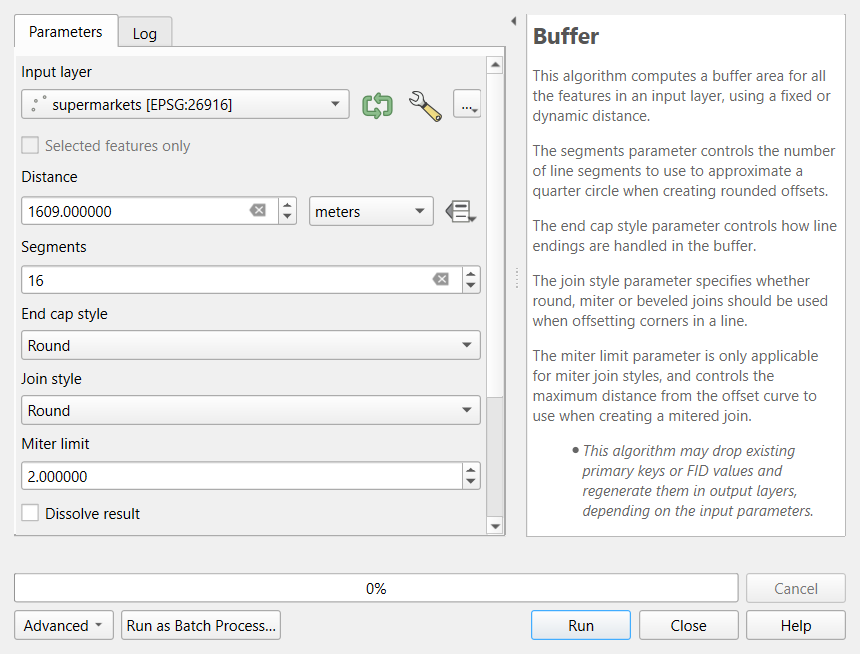
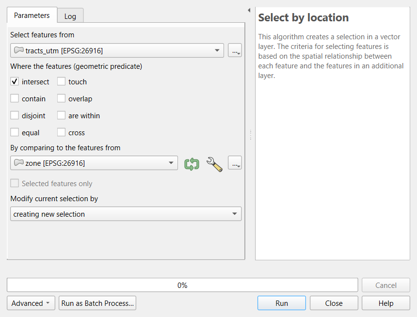
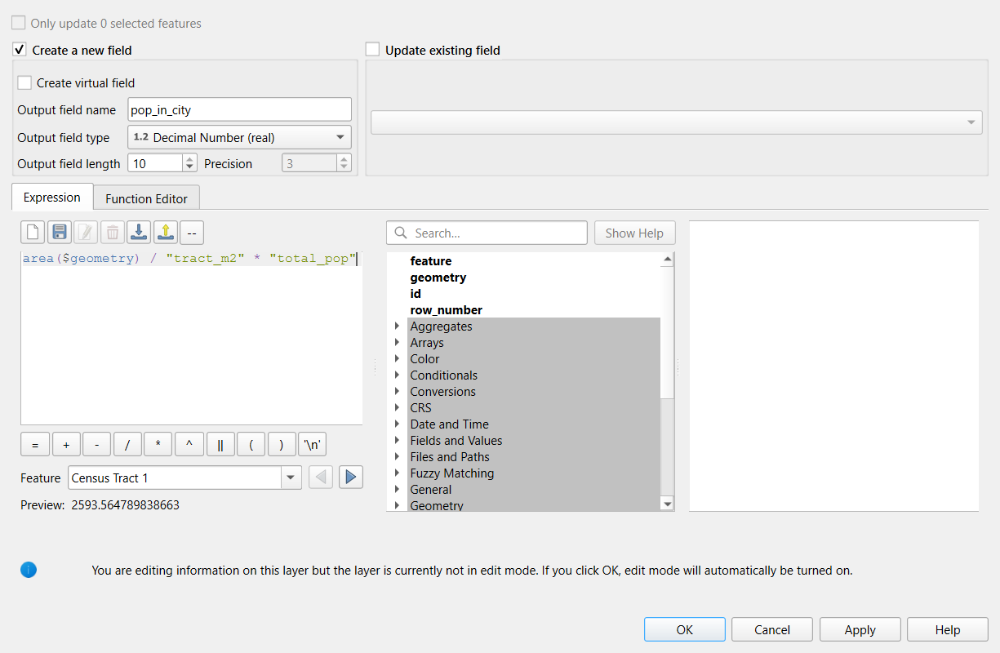
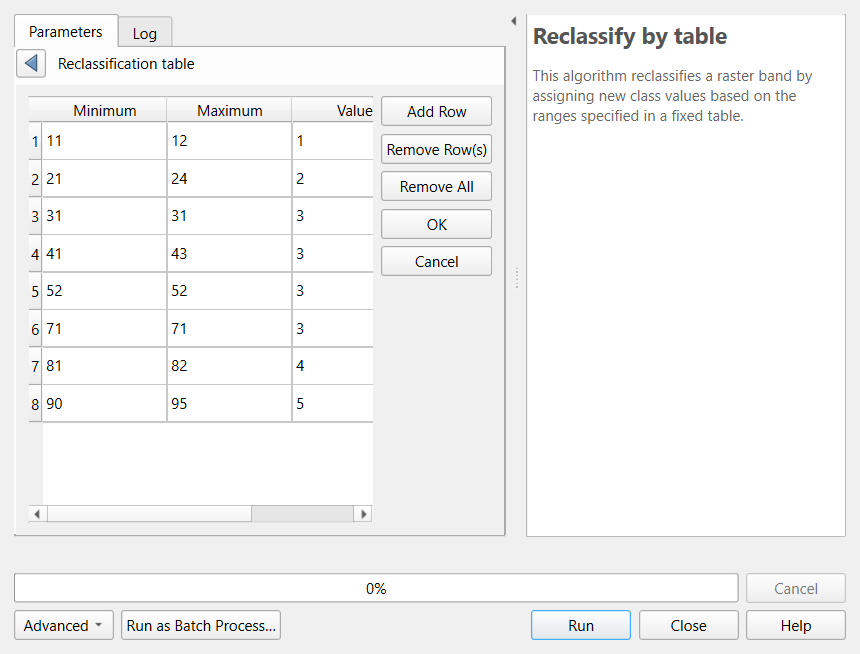
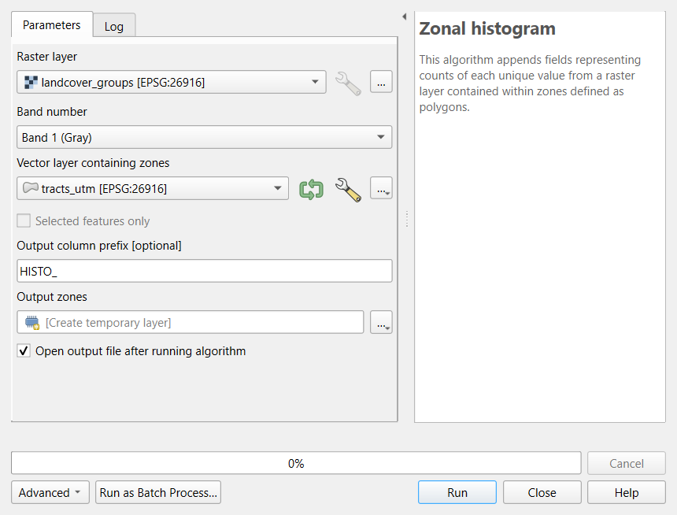
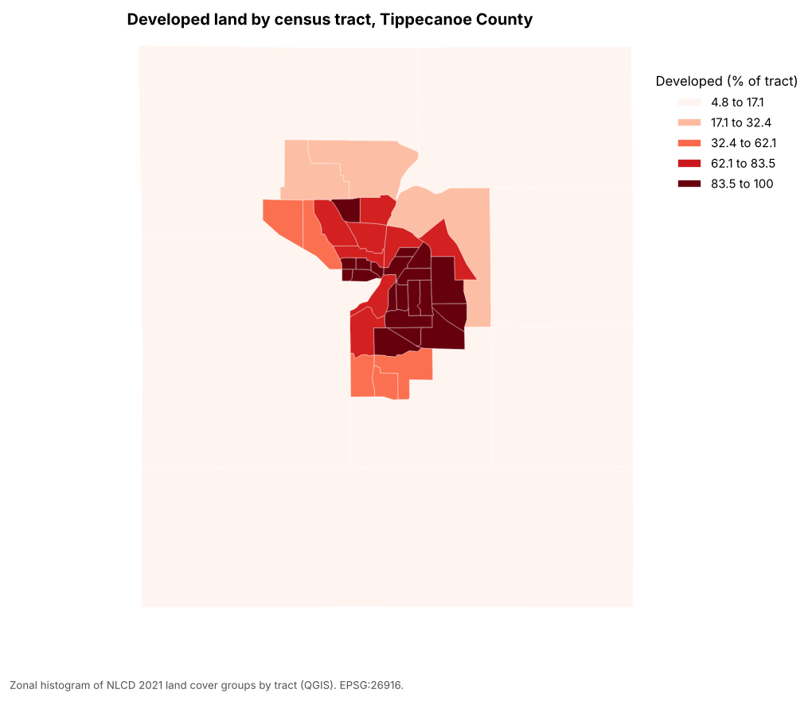

All in One View
Content from Introduction to Data Processing
Last updated on 2026-10-20 | Edit this page
Estimated time: 35 minutes
Overview
Questions
- What happens to data between downloading it and analyzing it?
- Why should I never edit my raw data?
- How do I make my processing steps repeatable and easy to check?
Objectives
- Describe the five stages of a processing workflow: inspect, clean, transform, combine and derive
- Explain why raw data is kept unchanged and how each step is recorded
- Choose a check that confirms a processing step did what you intended
- Find the right episode in this module for a processing task
From downloaded data to analysis-ready data
Data almost never arrives ready to analyze. A Census table stores its
identifiers as numbers and loses their leading zeros; a list of colleges
marks missing values with -2; a parks layer from
OpenStreetMap contains a polygon that crosses itself; two layers use
different coordinate systems. Data processing is
everything you do to turn the data you collected into data you can trust
in an analysis: cleaning it, putting it in the right shape and
coordinate system, combining it with other data, and deriving the
measures your question needs.
Processing is not glamorous, and it is easy to underestimate. In most research projects it takes more time than the analysis itself, and most mistakes that reach a published map or table were made here: a join that silently dropped a third of the rows, a code for “not available” averaged in as a real number, a buffer of 1,609 degrees instead of 1,609 meters. This module teaches the everyday operations, and just as importantly the habits that catch those mistakes.
![Flow diagram. A gray box, raw data, as downloaded, never edited, keep a copy, leads to five orange boxes in a row: 1 Inspect (rows, columns, types, CRS, missing values, a quick map), 2 Clean (fix types and IDs, codes to missing, duplicates, invalid geometry), 3 Transform (reproject, rename, units, new fields), 4 Combine (table joins, spatial joins, overlays such as buffer, clip and intersect) and 5 Derive (rasters and zonal statistics, rates, summaries). Each orange box has a small blue looping arrow labeled check. The last arrow leads to a green box, ready for analysis: documented, checked, reproducible. Above the row, a purple note says: Automate (episode 4), turn steps you repeat into a function, a loop, a batch run or a model. Below the row, a blue bar says: record every step, a script or notebook (Python), a model or the Processing History (QGIS), and a short log in plain words.](../dp_pipeline.png)
The five stages
| Stage | What you do | Typical tools | Where in this module |
|---|---|---|---|
| 1 Inspect | Look before you change anything: number of rows, column names and types, CRS, missing values, a quick map |
df.info(), .head(), .plot();
QGIS attribute table, Layer Properties, Statistics panel |
Cleaning |
| 2 Clean | Fix what is wrong: identifiers stored as numbers, codes that mean “missing”, duplicates, invalid geometries |
pandas, make_valid; QGIS Field Calculator,
Refactor Fields, Fix Geometries |
Cleaning |
| 3 Transform | Change the form without changing the meaning: reproject, rename, convert units, add calculated fields |
to_crs, rename; Reproject Layer, Field
Calculator |
Cleaning, Geoprocessing |
| 4 Combine | Bring data together: table joins, spatial joins and overlays (buffer, clip, intersect, dissolve) |
merge, sjoin, overlay; Join
Attributes, Vector > Geoprocessing Tools |
Geoprocessing |
| 5 Derive | Create the measures you will analyze: rates, densities, raster calculations, zonal statistics |
rasterio, rasterstats; Raster Calculator,
Zonal Statistics |
Raster Processing |
Real work does not always run in this order. You may find a cleaning problem only after a join, or decide to reproject before you clean. What matters is that every stage is done deliberately and checked.
Rule 1: never edit the raw data
Keep the files exactly as you downloaded them, in a folder of their
own (for example data/raw/), and write everything you
produce to another folder (data/processed/). If a step goes
wrong, you start again from the raw files instead of trying to undo a
change you no longer remember. Editing the raw file in place, by
retyping a cell in a spreadsheet or by editing a layer in QGIS and
saving it, destroys the evidence of what the data originally said. The
Data Management module’s Organizing,
Versioning and Backing Up episode describes folder layouts and
naming in more detail.
In this curriculum the raw files live on GitHub and are read straight into memory, so you cannot damage them by accident. Your own projects need the same protection.
Rule 2: record every step
A processing step that is not written down cannot be checked, repeated or explained. How you record it depends on the tool:
- Python. The notebook or script is the record. Run it from top to bottom on the raw data and you get the same result every time. Add a short comment or Markdown cell saying why each step is there.
- QGIS. Point-and-click work leaves no record by default, but QGIS keeps one for you if you use it: Processing > History lists every tool you ran with its exact settings, and a tool’s Advanced > Copy as Python Command gives the same step as code. The Graphical Modeler saves a chain of tools as a model you can run again (episode 4).
- Either tool. Keep a short log in plain words (a text file or a few lines in your project notes): what you downloaded and when, what you removed or changed, and why. For example: “Dropped 2 tracts with no households (Purdue campus); median income set to missing in 3 tracts where the Census code was -666666666.”
The log becomes the methods section of your report and the processing part of your metadata (see the Data Curation module’s Documentation episode).
Rule 3: check after every step
Every step can fail silently: it runs without an error but does not do what you meant. A check is a quick comparison between what you expected and what you got.
| After this step | Check |
|---|---|
| Reading a file | Number of rows and columns matches the source; identifiers look right (leading zeros kept) |
| Changing types or codes | Count of missing values before and after; minimum and maximum are plausible |
| Removing duplicates or rows | How many rows were removed, and are they the ones you meant? |
| Reprojecting | The layer still lands in the right place on a map; units are now meters |
| A table join | How many rows matched, and which did not? |
| An overlay or zonal statistics | Totals add up (population before and after), and a map of the result looks sensible |
A quick map is the most powerful check of all: a reprojection error, a shifted layer or a tract with an impossible value is often obvious at a glance.
Python or QGIS?
Every operation in this module exists in both tools, and each episode comes in a Python and a QGIS version that use the same data and reach the same numbers.
- QGIS is quicker for a one-off task and lets you see each result immediately.
- Python is better when you will repeat the work: next year’s data, another county, a reviewer asking you to change one step. The script records everything automatically.
Many projects use both: explore and check in QGIS, then write the final workflow in Python, or build it as a QGIS model.
In this module
| Episode | What you will learn |
|---|---|
| Cleaning and Preparing Data (Python or QGIS) | Read a raw Census table and a raw list of colleges, fix identifiers and types, turn codes into missing values, judge reliability, fix geometries and coordinate systems |
| Geoprocessing (Python or QGIS) | Buffers, selection by location, clip, intersect, dissolve, areal weighting and distances |
| Raster Processing (Python or QGIS) | Map algebra, reclassification, zonal statistics and dasymetric estimation |
| Automating Repeated Steps (Python or QGIS) | Functions and loops for many counties; batch processing and the Graphical Modeler in QGIS |
All episodes use data from Tippecanoe County, Indiana (Lafayette and West Lafayette), and Indiana as a whole. The advanced methods (network analysis, spatial autocorrelation, clustering, NDVI) are in the Data Analysis module.
Challenge 1: Put the steps in order
You want the median household income of every census tract within 1 mile of a supermarket. Put these steps in a sensible order, and say which stage each belongs to:
- Join the income table to the tract polygons by GEOID
- Look at the downloaded income table: 45 rows, GEOID read as a number
- Buffer the supermarkets by 1,609 meters and select the tracts that intersect the buffers
- Turn GEOID into text with its leading zeros, and the code -666666666 into a missing value
- Reproject tracts and supermarkets to UTM zone 16N (EPSG:26916)
b (inspect), d (clean), e (transform), a (combine), c (combine). Steps a and e can swap, but the cleaning in d must come before the join in a, or the join fails or matches the wrong rows, and the reprojection in e must come before the buffer in c, or the buffer is measured in degrees.
Challenge 2: Which check?
After joining a table of 45 tract estimates to a layer of 45 tract polygons, the attribute table shows 45 rows, but the income column is empty in 9 of them. What happened, and what check would have caught it right away?
Nine identifiers did not match, for example because one side lost its
leading zeros or one side is text and the other a number (QGIS and
pandas do not match "18157000100" to
18157000100). A join keeps every row of the target layer,
so the row count alone does not reveal it. The check is to count
the matches: in pandas, merge(..., indicator=True)
and value_counts() on the _merge column; in
QGIS, the number of features with a value in a joined field (for example
with the Statistics panel, or by sorting the column).
- Processing turns collected data into analysis-ready data: inspect, clean, transform, combine, derive
- Keep raw data unchanged and write results somewhere else
- Record every step: a notebook or script, the QGIS Processing History or a model, and a short log
- Check after every step, with counts, totals and a quick map
- Use QGIS for quick, visual work and Python (or a QGIS model) for work you will repeat
Content from Cleaning and Preparing Data in Python
Last updated on 2026-10-20 | Edit this page
Estimated time: 75 minutes
Overview
Questions
- What goes wrong when raw data is used as it was downloaded?
- How do I find and fix identifiers, types, special codes, duplicates and geometry problems in pandas and GeoPandas?
- How reliable is an American Community Survey estimate?
Objectives
- Recognize the common problems of raw tables and layers, and choose a fix for each
- Keep identifiers as text, convert types, and turn special codes into missing values
- Judge the reliability of ACS estimates with the coefficient of variation
- Create points from coordinates, recode categories, and decide what counts as a duplicate
- Check and repair geometries, and confirm each cleaning step with a count, a join or a map
Why cleaning comes first
Every downloaded dataset carries the habits of the system that produced it: the Census Bureau’s codes for “no estimate”, a federal directory’s codes for “not applicable”, a volunteer map’s unnamed and split features. None of these are errors in the source; they are conventions you have to know. But if you analyze the data without handling them, the software treats a code as a number, a split park as two parks, and a missing identifier as a mismatch, and it does so without any warning.
This episode cleans three raw files you will meet again later in the curriculum:
| File | Raw problems you will fix |
|---|---|
| ACS 2024 table for the 43 census tracts of Tippecanoe County, exactly as the Census API returned it | Identifiers split in three parts; numbers or text depending on the tool; codes such as -666666666; margins of error; a tract with no households |
| IPEDS directory of the 105 colleges and schools in Indiana (2023) | Coordinates in two columns; numeric category codes; -2
for “not applicable”; ZIP and ZIP+4 mixed; two pairs of colleges at the
same address |
| OpenStreetMap parks in Tippecanoe County, one feature per OSM object | Unnamed features; parks split into two features; possible invalid geometries |
The common problems
| Problem | What it looks like | Why it matters | Fix |
|---|---|---|---|
| Identifiers read as numbers | Tract 000100 becomes 100; ZIP
02138 becomes 2138
|
Joins fail or match the wrong rows | Read the column as text; rebuild with padding (zfill,
lpad) |
| Numbers read as text |
"53488" sorts before "9000"; sums are
impossible |
Sorting, statistics and maps go wrong | Convert the type (to_numeric, to_int) |
| Codes that mean “missing” |
-666666666, -2, 9999,
NA, an empty string |
Averages and maps include impossible values | Turn them into real missing values (NaN,
NULL) and count them |
| Categories stored as codes | SECTOR = 2 |
Unreadable tables and legends | Recode with the codebook (data dictionary) |
| Messy text | Trailing spaces, Purdue Univ. and
Purdue University
|
Groups and joins split one thing into two |
strip/trim, consistent case, a lookup
table |
| Duplicates | The same record twice, or two features for one object | Counts and totals inflated | Decide what makes two records the same (an ID), then remove or merge |
| Invalid geometry | A polygon whose edges cross itself | Overlays fail or give wrong areas | Check validity; repair with make_valid or Fix
Geometries |
| Wrong or missing CRS | Points near (0, 0), or a layer that lands in the ocean | Everything spatial is wrong | Define the CRS the coordinates are really in, then reproject |
Two fixes in that table are easy to confuse. Defining a CRS tells the software what the coordinates already are (it changes no numbers); reprojecting converts the coordinates to another CRS (every number changes). If a layer has no CRS, define it; if it has the right CRS but you need meters, reproject it. Defining the wrong CRS moves the layer to the wrong place on Earth.
Census annotation codes
The Census Bureau’s API returns numbers in every estimate column, so where no estimate exists it writes a large negative annotation code instead:
| Code | Meaning |
|---|---|
-666666666 |
The estimate could not be computed (too few sample cases, or nothing to compute, such as median household income where there are no households) |
-999999999 |
The estimate or margin of error cannot be shown (too few sample cases) |
-888888888 |
Not applicable |
-222222222 |
The margin of error could not be computed (too few sample observations) |
-333333333 |
The margin of error could not be computed, because the median is in
an open-ended top or bottom range (median income 250001
means “$250,000 or more”) |
-555555555 |
The estimate is controlled (fixed by design), so its margin of error is zero |
In Tippecanoe County, Census Tract 104 has 8,248 residents and
no households: it is the Purdue residence halls, where
everyone lives in group quarters. Its median household income and median
rent are both -666666666, and any rate with households as
the denominator is undefined (a division by zero). Two other tracts have
too few sample cases for one of the medians.
Margins of error and reliability
The American Community Survey asks a sample of households, so every number is an estimate with a margin of error (MOE): with 90% confidence the true value lies between estimate minus MOE and estimate plus MOE. To compare how reliable different estimates are, divide the standard error (MOE / 1.645) by the estimate:
\[CV = \frac{MOE / 1.645}{\text{estimate}} \times 100\]
The coefficient of variation (CV) is the error as a percentage of the estimate. A widely used rule of thumb: under 12% is high reliability, 12 to 40% medium, over 40% low.
Small counts are the usual problem. In Tippecanoe County, median household income has medium or high reliability in every tract, but the number of households without a car has a CV over 40% in 25 of the 42 tracts that have households. That does not make the variable useless, but it limits what you can say: map it in a few broad classes, add up tracts into larger areas, report the margins, and do not rank single tracts.
Rows you remove are decisions
Cleaning includes choices that are not fixes: keeping only degree-granting colleges, dropping unnamed park features, leaving out the residence-hall tract from a rate. Each is reasonable, and each changes the result. Write them down, with the number of rows affected, in your processing log (see the Introduction).
Check after every step
| Step | Check |
|---|---|
| Reading the file | Row count matches the source (43 tracts, 105 institutions, 80 park features) |
| Fixing identifiers | GEOIDs have 11 characters; every row joins to a boundary |
| Turning codes into missing | Count of codes before (8) and after (0); count of missing values |
| Filtering and merging | Rows before and after (105 to 70 colleges; 80 to 70 to 68 parks) |
| Making points | The points land in Indiana, in the county their record names |
| Comparing with a trusted copy | The cleaned files match those the Foundations module uses |
The same cleaning in QGIS
The Cleaning and Preparing Data in QGIS episode cleans the same three files with the Refactor Fields, Create Points Layer from Table, Check Validity and Dissolve tools, and reaches the same numbers.
The workflow in code
The two notebooks go step by step. The core of the Census table cleaning:
PYTHON
import pandas as pd
raw = pd.read_csv(url, dtype={"state": str, "county": str, "tract": str}) # identifiers as text
raw["GEOID"] = raw["state"] + raw["county"] + raw["tract"] # 18 + 157 + 000100
acs = raw.rename(columns={"B19013_001E": "median_income", "B19013_001M": "median_income_moe"})
num = acs.select_dtypes("number").columns
print("codes:", acs[num].lt(-100_000_000).sum().sum()) # count before
acs[num] = acs[num].mask(acs[num] < -100_000_000) # codes -> NaN
acs["income_cv"] = (acs["median_income_moe"] / 1.645) / acs["median_income"] * 100
acs["pct_no_vehicle"] = acs["hh_no_vehicle"] / acs["households"].where(acs["households"] > 0) * 100And of the points and polygons:
PYTHON
import geopandas as gpd
colleges = gpd.GeoDataFrame(df, geometry=gpd.points_from_xy(df["LONGITUD"], df["LATITUDE"]), crs="EPSG:4326")
print((~parks.is_valid).sum(), "invalid geometries")
parks = parks[parks["name"].notna()].dissolve(by="name", as_index=False) # drop unnamed, merge split parksChallenge 1: What went wrong?
A colleague joins a Census table to tract boundaries in pandas and
gets zero matches. The table’s GEOID column shows values
like 18157000100 and the boundaries show
18157000100 too. What is the most likely cause, and how do
you confirm it?
One side holds the GEOID as a number and the other
as text; pandas does not match 18157000100
to "18157000100". Confirm with df.dtypes (or
df["GEOID"].map(type).value_counts()) on both sides. Fix it
by reading the column as text (dtype={"GEOID": str}), so
leading zeros are kept for states such as Alabama (01)
too.
Challenge 2: Rank the tracts?
A news story wants to name “the five tracts in Tippecanoe County with the most households without a car”. The raw table gives these five estimates, with their margins of error (MOE):
| Tract | Households without a car | MOE |
|---|---|---|
| 55 | 909 | 289 |
| 4 | 666 | 291 |
| 112 | 425 | 168 |
| 102.08 | 411 | 211 |
| 111 | 384 | 179 |
Is the ranking sound? What would you suggest?
Not as a strict ranking. The 90% intervals overlap widely: tract 111 could have as many as 384 + 179 = 563 households without a car, and tract 4 as few as 666 - 291 = 375, so even second and fifth place could swap, and places 3 to 5 are hard to tell apart. The sixth tract (7, with 341 plus or minus 164) could belong in the list too. Say that these tracts have among the highest numbers, report the margins, or test whether two estimates differ significantly (the Census Bureau publishes a simple formula for that). Tract 55 stands out, but its interval (620 to 1,198) still overlaps tract 4’s (375 to 957).
Challenge 3: Define or reproject?
You receive a CSV of community centers with columns x
and y holding values such as 506512 and
4475023, and no CRS. The data provider says they are “UTM
zone 16N, NAD83”. What do you do in GeoPandas?
The values are in meters, not degrees, so the CRS is
EPSG:26916. Define it when you create
the points:
gpd.GeoDataFrame(df, geometry=gpd.points_from_xy(df["x"], df["y"]), crs="EPSG:26916").
Do not use to_crs() for this: it would try to convert
coordinates that have no CRS yet (GeoPandas refuses). Reproject
afterwards only if you need another CRS, for example
to_crs(epsg=4326) for a web map.
- Inspect before changing anything: shape, types, minimum and maximum reveal most problems
- Read identifiers as text, convert numbers stored as text, and turn special codes into missing values
- ACS estimates have margins of error; the coefficient of variation shows which ones are too uncertain to rank
- Decide what makes two records the same before removing duplicates
- Define a CRS to say what coordinates are; reproject to change them
- Check every step with a count, a join or a map, and write your decisions down
Notebooks
| Notebook | What you will do |
|---|---|
| 1a. Cleaning a Census Table | Read the raw ACS table, build GEOIDs, turn codes into missing values, compute reliability and a safe rate, and check with a join and a map |
| 1b. Cleaning Points and Polygons | Make college points from coordinates, recode categories, find shared locations, check and merge OpenStreetMap parks |
Content from Cleaning and Preparing Data in QGIS
Last updated on 2026-10-20 | Edit this page
Estimated time: 80 minutes
Overview
Questions
- What goes wrong when raw data is used as it was downloaded?
- How do I fix types, identifiers, special codes, duplicates and geometry problems in QGIS?
- How reliable is an American Community Survey estimate?
Objectives
- Recognize the common problems of raw tables and layers, and choose a fix for each
- Use Refactor Fields to rename fields, set their types, build a GEOID and turn special codes into NULL
- Judge the reliability of ACS estimates with the coefficient of variation
- Create points from a table of coordinates and find records that share a location
- Check geometry validity, remove unwanted features, dissolve split features and confirm each step
Why cleaning comes first
Every downloaded dataset carries the habits of the system that produced it: the Census Bureau’s codes for “no estimate”, a federal directory’s codes for “not applicable”, a volunteer map’s unnamed and split features. None of these are errors in the source; they are conventions you have to know. But if you analyze the data without handling them, the software treats a code as a number, a split park as two parks, and a missing identifier as a mismatch, and it does so without any warning.
This episode cleans three raw files you will meet again later in the curriculum:
| File | Raw problems you will fix |
|---|---|
| ACS 2024 table for the 43 census tracts of Tippecanoe County, exactly as the Census API returned it | Identifiers split in three parts; numbers or text depending on the tool; codes such as -666666666; margins of error; a tract with no households |
| IPEDS directory of the 105 colleges and schools in Indiana (2023) | Coordinates in two columns; numeric category codes; -2
for “not applicable”; ZIP and ZIP+4 mixed; two pairs of colleges at the
same address |
| OpenStreetMap parks in Tippecanoe County, one feature per OSM object | Unnamed features; parks split into two features; possible invalid geometries |
The common problems
| Problem | What it looks like | Why it matters | Fix |
|---|---|---|---|
| Identifiers read as numbers | Tract 000100 becomes 100; ZIP
02138 becomes 2138
|
Joins fail or match the wrong rows | Read the column as text; rebuild with padding (zfill,
lpad) |
| Numbers read as text |
"53488" sorts before "9000"; sums are
impossible |
Sorting, statistics and maps go wrong | Convert the type (to_numeric, to_int) |
| Codes that mean “missing” |
-666666666, -2, 9999,
NA, an empty string |
Averages and maps include impossible values | Turn them into real missing values (NaN,
NULL) and count them |
| Categories stored as codes | SECTOR = 2 |
Unreadable tables and legends | Recode with the codebook (data dictionary) |
| Messy text | Trailing spaces, Purdue Univ. and
Purdue University
|
Groups and joins split one thing into two |
strip/trim, consistent case, a lookup
table |
| Duplicates | The same record twice, or two features for one object | Counts and totals inflated | Decide what makes two records the same (an ID), then remove or merge |
| Invalid geometry | A polygon whose edges cross itself | Overlays fail or give wrong areas | Check validity; repair with make_valid or Fix
Geometries |
| Wrong or missing CRS | Points near (0, 0), or a layer that lands in the ocean | Everything spatial is wrong | Define the CRS the coordinates are really in, then reproject |
Two fixes in that table are easy to confuse. Defining a CRS tells the software what the coordinates already are (it changes no numbers); reprojecting converts the coordinates to another CRS (every number changes). If a layer has no CRS, define it; if it has the right CRS but you need meters, reproject it. Defining the wrong CRS moves the layer to the wrong place on Earth.
Census annotation codes
The Census Bureau’s API returns numbers in every estimate column, so where no estimate exists it writes a large negative annotation code instead:
| Code | Meaning |
|---|---|
-666666666 |
The estimate could not be computed (too few sample cases, or nothing to compute, such as median household income where there are no households) |
-999999999 |
The estimate or margin of error cannot be shown (too few sample cases) |
-888888888 |
Not applicable |
-222222222 |
The margin of error could not be computed (too few sample observations) |
-333333333 |
The margin of error could not be computed, because the median is in
an open-ended top or bottom range (median income 250001
means “$250,000 or more”) |
-555555555 |
The estimate is controlled (fixed by design), so its margin of error is zero |
In Tippecanoe County, Census Tract 104 has 8,248 residents and
no households: it is the Purdue residence halls, where
everyone lives in group quarters. Its median household income and median
rent are both -666666666, and any rate with households as
the denominator is undefined (a division by zero). Two other tracts have
too few sample cases for one of the medians.
Margins of error and reliability
The American Community Survey asks a sample of households, so every number is an estimate with a margin of error (MOE): with 90% confidence the true value lies between estimate minus MOE and estimate plus MOE. To compare how reliable different estimates are, divide the standard error (MOE / 1.645) by the estimate:
\[CV = \frac{MOE / 1.645}{\text{estimate}} \times 100\]
The coefficient of variation (CV) is the error as a percentage of the estimate. A widely used rule of thumb: under 12% is high reliability, 12 to 40% medium, over 40% low.
Small counts are the usual problem. In Tippecanoe County, median household income has medium or high reliability in every tract, but the number of households without a car has a CV over 40% in 25 of the 42 tracts that have households. That does not make the variable useless, but it limits what you can say: map it in a few broad classes, add up tracts into larger areas, report the margins, and do not rank single tracts.
Rows you remove are decisions
Cleaning includes choices that are not fixes: keeping only degree-granting colleges, dropping unnamed park features, leaving out the residence-hall tract from a rate. Each is reasonable, and each changes the result. Write them down, with the number of rows affected, in your processing log (see the Introduction).
Check after every step
| Step | Check |
|---|---|
| Reading the file | Row count matches the source (43 tracts, 105 institutions, 80 park features) |
| Fixing identifiers | GEOIDs have 11 characters; every row joins to a boundary |
| Turning codes into missing | Count of codes before (8) and after (0); count of missing values |
| Filtering and merging | Rows before and after (105 to 70 colleges; 80 to 70 to 68 parks) |
| Making points | The points land in Indiana, in the county their record names |
| Comparing with a trusted copy | The cleaned files match those the Foundations module uses |
The same cleaning in Python
The Cleaning and Preparing Data in
Python episode cleans the same three files with pandas and GeoPandas
and reaches the same numbers. One difference is worth knowing: pandas
guesses types and reads the tract code 000100 as the number
100, while QGIS (reading the CSV through the web) reads
every column as text. The problems are opposite, and so
are the fixes.
Hands-on
These steps were checked in QGIS 4.0; in QGIS 3.34 and later the tools are the same. Keep the Processing Toolbox open (Processing > Toolbox) and use its search box to find each tool.
Add every layer with Layer > Add Layer > Add Vector Layer, Source Type: Protocol: HTTP(S), cloud, etc., Type: HTTP/HTTPS/FTP (in QGIS 4 the Type list starts with cloud services, so check it), as in the Foundations QGIS episodes. A CSV loaded this way has no geometry: it appears in the Layers panel as a table.
Part 1: Inspect the raw Census table
Add
https://raw.githubusercontent.com/SpatialTurn/DataProcessing/main/data/acs_2024_tippecanoe_tracts_raw.csv.-
Open its attribute table. Click the
B19013_001Eheader (median household income) to sort by it. The raw ACS table, sorted by median household income.
The raw ACS table, sorted by median household income.
The sort is alphabetical: 121357 comes before
12644 because QGIS read every column as
text. (The state, county and
tract columns are text too, which is what we want for them:
000100 keeps its zeros.) Scroll down and you will also find
the codes -666666666 and -222222222.
Check: 43 rows, one per tract; Layer Properties > Fields lists every field as String.
Part 2: Refactor the fields
Refactor Fields makes a new layer in which you choose each field’s name, type and contents (an expression), all in one table. The original layer is not changed.
Processing Toolbox: Refactor fields. Input layer:
acs_2024_tippecanoe_tracts_raw. The table lists the 14 original fields.-
Delete every row (select them all in the table and click Delete selected field), then add rows with the Add new field button until you have these eight. Type each Source Expression (or open the ε button to use the expression builder), then set Name and Type:
Source expression Name Type concat("state", "county", "tract")GEOIDText (string) left("NAME", strpos("NAME", ';') - 1)nameText (string) to_int("B01003_001E")popInteger (32 bit) if(to_int("B19013_001E") < 0, NULL, to_int("B19013_001E"))median_incomeInteger (32 bit) if(to_int("B19013_001M") < 0, NULL, to_int("B19013_001M"))median_income_moeInteger (32 bit) to_int("B08201_001E")householdsInteger (32 bit) to_int("B08201_002E")hh_no_vehicleInteger (32 bit) to_int("B08201_002M")hh_no_vehicle_moeInteger (32 bit) concat()joins text,to_int()turns text into a whole number, andif(condition, NULL, value)replaces a code with NULL, QGIS’s missing value.left()andstrpos()keep the part of the name before the first semicolon.![Screenshot of the QGIS Refactor fields tool. Input layer is acs_2024_tippecanoe_tracts_raw. The Fields mapping table has eight rows with columns Source Expression, Name, Type, Length and Precision: concat of state, county and tract as GEOID, Text (string), length 11; left of NAME up to the semicolon as name, Text (string), length 40; to_int of B01003_001E as pop, Integer (32 bit); an if expression on B19013_001E as median_income and on B19013_001M as median_income_moe, both Integer (32 bit); and to_int of B08201_001E, B08201_002E and B08201_002M as households, hh_no_vehicle and hh_no_vehicle_moe, all Integer (32 bit). The output, Refactored, is a temporary layer.](../cl_qgis_refactor.png) Refactor Fields with the eight output fields.
Refactor Fields with the eight output fields. Leave Refactored as a temporary layer, click Run, and rename the result
acs_clean.
Check: open the attribute table of
acs_clean. Numbers are now right-aligned and sort as
numbers; GEOID reads 18157000100 for tract 1;
median_income is NULL in two rows (tracts
104 and 105). Sorting by median_income puts the lowest real
income, 12,644, at the top.
Save the mapping
The … button beside the fields table (or the Load Fields template option) lets you reuse a mapping. For a task you will repeat, the Automating Repeated Steps episode shows how to keep the whole chain of tools as a model.
Part 3: Reliability and a safe rate
acs_clean is a temporary layer, so its Field Calculator
can add real fields.
-
Open the attribute table of
acs_cleanand the Field Calculator (abacus icon). Create these fields one at a time, each a Decimal number (real) unless stated:Field Expression income_cvround(("median_income_moe" / 1.645) / "median_income" * 100, 1)income_rel(Text)CASE WHEN "income_cv" < 12 THEN 'high' WHEN "income_cv" < 40 THEN 'medium' WHEN "income_cv" >= 40 THEN 'low' ENDno_vehicle_cvround(("hh_no_vehicle_moe" / 1.645) / nullif("hh_no_vehicle", 0) * 100, 1)pct_no_vehicleround("hh_no_vehicle" / nullif("households", 0) * 100, 1)nullif(x, 0)returns NULL whenxis 0, so a division by zero gives NULL instead of an error. Click the pencil icon to stop editing, and save.
Check: in the Statistics panel (View > Panels > Statistics) or by sorting:
-
income_relis high in 21 tracts and medium in 20 (2 are NULL); -
no_vehicle_cvis 40 or more in 25 tracts: most counts of households without a car are too uncertain to rank; -
pct_no_vehicleis NULL only for tract 104 (no households) and ranges from 0.2 to 40.7.
Part 4: Join to the boundaries and check the matches
- Add
https://raw.githubusercontent.com/SpatialTurn/Foundations/main/data/tippecanoe_tracts.geojson. - Processing Toolbox: Join attributes by field value.
Input layer:
tippecanoe_tracts, Table field:GEOID; Input layer 2:acs_clean, Table field 2:GEOID; Join type: take attributes of the first matching feature only. Run. - Open the Log tab of the tool’s dialog (or the Processing log) before closing it.
Check: the log says “43 features from input layer
were successfully matched”, and its Results line shows
'UNJOINABLE_COUNT': 0. If the GEOID had lost its zeros, or
one side were text and the other a number, this is where you would see
it. Style the result by median_income (with
Symbology > Graduated): the two NULL tracts are not
drawn, so add a gray layer of the boundaries underneath to show
them.
Part 5: Colleges from a table of coordinates
Add
https://raw.githubusercontent.com/SpatialTurn/DataProcessing/main/data/ipeds_hd2023_indiana_raw.csv(105 rows) and look at the attribute table:CLOSEDATreads-2followed by spaces, ZIP codes mix47306and47374-4019, andSECTORholds codes 1 to 9.-
Processing Toolbox: Create points layer from table. X field:
LONGITUD(x is longitude), Y field:LATITUDE, Target CRS:EPSG:4326 - WGS 84(the coordinates are in degrees). Run, and rename the resultcolleges_points. Create Points Layer from Table.
Create Points Layer from Table. Extract by attribute: Input layer
colleges_points, Selection attributeDEGGRANT, Operator=, Value1. Rename the resultcolleges.
Check: 105 points, all inside Indiana; 70 degree-granting colleges.
Part 6: Same place, same college?
-
With
collegesselected in the Layers panel, click Select Features by Expression (the ε icon with a yellow square) and enter:count(@id, group_by := geom_to_wkt($geometry)) > 1It counts the features at each exact location and selects those that share one.
Click Select Features, then open the attribute table and choose Show Selected Features.
Check: 4 selected: Trine University and its regional
campus, and Indiana Institute of Technology and its College of
Professional Studies. They are four different institutions (four
different UNITIDs) at two addresses. QGIS’s Delete
duplicate geometries tool would remove two of them, so do not
use it here.
- For a last check, run Join attributes by location:
Join to features in
colleges, where the features are within, by comparing to the Indiana counties (https://raw.githubusercontent.com/SpatialTurn/Foundations/main/data/indiana_counties.geojson), fields to add:fips. In the result, Select by Expression"fips" <> "COUNTYCD": 0 features. Every college lies in the county its record names.
Part 7: Parks from OpenStreetMap
Add
https://raw.githubusercontent.com/SpatialTurn/DataProcessing/main/data/osm_parks_tippecanoe_raw.geojson: 80 features.-
Processing Toolbox: Check validity. Input layer: the parks; Method: GEOS. Run.
 The Check Validity tool.
The Check Validity tool.Check: the Valid output has 80 features, the Invalid output 0. If there were invalid features, Fix geometries would repair them; check the repaired shapes on the map.
Extract by expression:
"name" IS NOT NULL. Check: 70 features (10 unnamed removed).Vector > Geoprocessing Tools > Dissolve, Dissolve field(s):
name. Check: 68 parks: McAllister Park and Triangle Park, each mapped as two features, are now one.Reproject Layer to EPSG:26916, and in the Field Calculator add
area_ha, a decimal field,area($geometry) / 10000. Check: the largest is Ross Hills Park, about 143.5 ha, then McAllister Park, about 105 ha.
The result has the same 68 parks as the parks file the Foundations and Case Studies modules use.
Challenge 1: The rent columns
Run Refactor fields on the raw table again, this
time adding median_rent and median_rent_moe
from B25064_001E and B25064_001M (with the
same if(... < 0, NULL, ...) pattern). How many tracts
have no rent estimate, and which?
Two: tract 16.01 (too few renters in the sample) and tract 104 (no
households). Their raw values are -666666666 (estimate) and
-222222222 (margin of error). The Refactor Fields dialog
remembers its last mapping, so you only add two rows.
Challenge 2: Rank the tracts?
A news story wants to name “the five tracts in Tippecanoe County with
the most households without a car”. In acs_clean, sort by
hh_no_vehicle: tracts 55 (909, MOE 289), 4 (666, MOE 291),
112 (425, MOE 168), 102.08 (411, MOE 211) and 111 (384, MOE 179). Is the
ranking sound?
Not as a strict ranking. Tract 111 could have as many as 384 + 179 = 563 households without a car and tract 4 as few as 666 - 291 = 375, so second and fifth place could swap, and places 3 to 5 are hard to tell apart. The sixth tract (7, with 341 plus or minus 164) could belong in the list too. Say that these tracts have among the highest numbers and report the margins.
Challenge 3: Define or reproject?
You receive a CSV of community centers with columns x
and y holding values such as 506512 and
4475023, and the provider says they are “UTM zone 16N,
NAD83”. What do you choose in Create points layer from
table?
The values are meters, so the Target CRS is EPSG:26916 (NAD83 / UTM zone 16N): that defines what the coordinates are. Choosing EPSG:4326 would place the points at longitude 506,512, which does not exist. If you later need degrees, Reproject Layer converts them.
- Inspect before changing anything: sorting a column quickly shows text that should be numbers and special codes
- Refactor Fields renames fields, sets their types and fills them with expressions in one step, without changing the original
-
to_int(),if(... < 0, NULL, ...)andnullif(x, 0)handle text numbers, codes and division by zero - ACS estimates have margins of error; the coefficient of variation shows which are too uncertain to rank
- Create points from coordinates with the CRS they are in; decide what makes two records the same before deleting
- Check validity, remove unwanted features and dissolve split ones, and confirm each step with a count
Content from Geoprocessing in Python
Last updated on 2026-10-20 | Edit this page
Estimated time: 90 minutes
Overview
Questions
- What are the everyday geoprocessing operations, and what does each one produce?
- Why must a layer be projected before buffering or measuring?
- How do I estimate how many people live in a zone that cuts across census tracts?
- How do I do all of this with GeoPandas?
Objectives
- Explain buffer, dissolve, clip, intersect, difference and nearest join, and choose the right one
- Select features by location and explain how the choice of spatial predicate changes the answer
- Estimate a population inside a zone with areal weighting, and state the assumption behind it
- Measure straight-line distances to the nearest facility and recognize their limits
- Run each operation in GeoPandas on real Lafayette data
What is geoprocessing?
Geoprocessing means operations that take one or more
spatial layers and produce a new layer: a zone around every store, the
parts of tracts inside a city, the distance from each neighborhood to
its nearest clinic. A small set of operations covers most everyday GIS
work, and every GIS program (QGIS, ArcGIS Pro, GeoPandas, R’s
sf) offers the same ones under similar names.
This episode answers one question with them: how many people in Lafayette and West Lafayette live within 1 mile of a supermarket? The Geoprocessing in QGIS episode answers the same question with the same data by pointing and clicking, so you can follow either one (or both) and compare results.
![Six small diagrams. Inputs: three store points, four square tracts drawn with gray lines and a city boundary outline. 1. Buffer: an orange circle around each point; the circles overlap. 2. Dissolve: the circles merged into one orange shape with no inner lines. 3. Clip: the four tracts cut to the city outline, shaded blue. 4. Intersect: only the parts of the clipped tracts that fall inside the merged circles, shaded orange, still split along tract lines. 5. Difference: the parts of the clipped tracts outside the circles, shaded blue.](../da_geoprocessing_ops.png)
The operations
| Operation | Question it answers | Output | GeoPandas |
|---|---|---|---|
| Buffer | What is within d meters of each feature? | One polygon per feature | layer.buffer(d) |
| Dissolve | What is the combined area, or the total per group? | Merged features | layer.dissolve(by=..., aggfunc=...) |
| Select by location | Which features touch, contain or lie within another layer? | A subset (no new shapes) | layer[layer.intersects(shape)] |
| Clip | What part of this layer lies inside a boundary? | Cut shapes, own attributes only | gpd.clip(layer, boundary) |
| Intersect | Where do two layers overlap? | Cut shapes, attributes of both | gpd.overlay(a, b, how="intersection") |
| Difference | What part of A lies outside B? | Cut shapes of A | gpd.overlay(a, b, how="difference") |
| Nearest join | What is the closest feature, and how far is it? | Each row plus the nearest match and a distance | gpd.sjoin_nearest(a, b, distance_col=...) |
Two habits make the difference between a result you can trust and one you cannot:
- Clip versus intersect. Both cut shapes. Clip only uses the second layer as a cookie cutter; intersect also copies its attributes onto every piece. Use intersect when you need to know which zone each piece is in.
- Keep the original area. Once a tract is cut, you can no longer tell what share of it remains. Store its area in a column before any clip or intersect.
Projection comes first
A buffer distance and a measured area are in the units of the layer’s
coordinate reference system (CRS). Data from the web usually arrives in
EPSG:4326, latitude and longitude in degrees.
buffer(1609) on such a layer draws a circle 1,609
degrees wide, larger than the planet. A small value such as
buffer(0.015) looks plausible but is still wrong: in
Indiana a degree of longitude is about 85 km and a degree of latitude
about 111 km, so the “circle” is an ellipse. GeoPandas warns you
(“Geometry is in a geographic CRS”); take the warning seriously.
Convert every layer to a projected CRS in meters first. For Indiana, EPSG:26916 (UTM zone 16N) is the usual choice for local work. All layers in an operation must also share the same CRS; GeoPandas refuses to overlay layers with different ones. Foundations notebook 4b and the Data Management module’s Coordinate Reference Systems episode cover the theory.
Choosing a distance
A buffer is only as meaningful as its distance. Common thresholds in access research:
| Distance | Roughly | Typical use |
|---|---|---|
| 400 m (a quarter mile) | 5-minute walk | Bus stops, small parks |
| 800 m (a half mile) | 10-minute walk | Parks, transit stations, corner stores |
| 1.6 km (1 mile) | 20-minute walk | Supermarkets in urban areas (the USDA’s urban threshold) |
| 16 km (10 miles) | Short drive | Supermarkets in rural areas (the USDA’s rural threshold) |
Choose the distance from the literature or from a policy you are evaluating, write it down, and test whether your conclusion changes with a smaller or larger value. That last step is a sensitivity analysis, and it is cheap: change one number and rerun.
Selecting by location
Select by location keeps the features of one layer that pass a spatial predicate against another:
| Predicate | True when |
|---|---|
intersects |
The shapes share any point (touching counts) |
within |
The feature is completely inside the other shape |
contains |
The other shape is completely inside the feature |
centroid within
|
The feature’s center point is inside the other shape |
The predicate changes the answer, sometimes dramatically. With the 1-mile supermarket zone in Lafayette, 35 tracts intersect it, only 6 lie completely within it, and 24 have their center inside it. None of these is wrong, but a report that says “24 tracts are near a supermarket” must say which test produced that number.
From areas to people: areal weighting
Tracts do not line up with buffers or city limits, so a tract is often split. If 40% of a tract’s area falls in the 1-mile zone, how many of its residents live there? Areal weighting assumes they are spread evenly, so it assigns 40% of the population:
estimated people in a piece = tract population × (piece area ÷ tract area)
It is simple and transparent, and it is wrong in a predictable way: people live in houses, not in fields, parks, rivers or parking lots. Areal weighting overestimates people in empty parts of a tract and underestimates them in dense parts. It works best when the pieces are large or the tracts uniformly built up. Better methods use smaller units (block groups, blocks) or ancillary data such as land cover, a technique called dasymetric mapping. The Raster Processing episode shows how land cover can be summarized by tract, which is the first step.
Applied to Lafayette, areal weighting estimates about 114,000 residents inside the two cities (the 2020 Census counted about 115,000), and about 68% of them within 1 mile of a supermarket.
Counts, rates and dissolving
dissolve(by="column", aggfunc="sum") merges features
with the same value and adds up their numbers. Summing is right for
counts (people, households, households without a car)
and wrong for rates and medians (poverty rate, median
income). To get a rate for a merged area, sum the numerator and the
denominator separately and divide. For a median there is no exact
shortcut; use a population-weighted average as an approximation and say
so.
Distance to the nearest facility
A buffer gives a yes or no answer. A nearest join keeps the detail: it matches every feature (here, each tract’s center point) to its closest supermarket and records the distance. Two practical points:
-
Ties. If two stores are exactly equally close,
sjoin_nearest()returns both, adding a row. Always compare row counts before and after. - Distance to a polygon is measured to its nearest edge, not its center, which is usually what you want for parks or service areas.
Pitfalls
- Edge effects. The store layer covers only the two cities. A rural tract near the county line may have a supermarket just outside the data, so this episode limits the analysis to the city limits. Always ask what lies just beyond your study area.
- Straight line is not travel. Rivers, railroads and highways turn a 1-mile straight line into a much longer trip. The Data Analysis module’s Network Analysis episode, and Grocery Access Part 2 in the Case Studies module, measure along roads instead.
- Centroids are not people. A tract center can fall in a field. Population-weighted centers or smaller units give fairer distances.
- The modifiable areal unit problem (MAUP). Results change when the same data is grouped into different units (tracts versus block groups). Note it as a limitation; the Data Analysis module’s Spatial Autocorrelation episode returns to it.
- Data currency. OpenStreetMap stores open and close. Check the data against local knowledge.
The same analysis in QGIS
Every step here has a QGIS tool with nearly the same name (Buffer, Dissolve, Select by Location, Clip, Intersection, Difference, Join Attributes by Nearest). The Geoprocessing in QGIS episode walks through them with the same layers, and the numbers should match.
The workflow in code
The three notebooks build the analysis step by step. In outline:
PYTHON
import geopandas as gpd
stores = gpd.read_file(stores_url).to_crs(epsg=26916) # project first
supermarkets = stores[stores["store_type"] == "Supermarket"]
zone = supermarkets.buffer(1609) # buffer: 1 mile in meters
zone = gpd.GeoDataFrame(geometry=zone).dissolve() # dissolve the overlaps
tracts["tract_m2"] = tracts.area # keep the original area
in_city = gpd.clip(tracts, city) # clip to the city
pieces = gpd.overlay(in_city, zone, how="intersection") # intersect with the zone
pieces["pop_near"] = pieces.area / pieces["tract_m2"] * pieces["total_pop"] # areal weightingChallenge 1: Which operation?
Name the operation (or operations) for each task.
- Show the parts of Tippecanoe County that are within 500 m of the Wabash River.
- Count the households in each tract that live within 500 m of the river.
- Keep only the bus stops that lie inside the West Lafayette city limits.
- Find the closest library to each school, and how far away it is.
- Buffer the river by 500 m (projected first), then dissolve if it is made of several segments.
- Intersect the tracts with the dissolved buffer, then areal weighting on the households column. Keep each tract’s original area before intersecting.
-
Select by location with
within(or clip, which gives the same points for a point layer). -
Nearest join (
sjoin_nearestwithdistance_col).
Challenge 2: Spot the mistake
A classmate’s notebook claims that 100% of the city’s residents live
within 1 mile of a supermarket. Their code starts with
stores = gpd.read_file(url) and goes straight to
stores.buffer(1609). What went wrong, and how do you fix
it?
The layer is still in EPSG:4326, so the buffer distance was read as
1,609 degrees: each buffer covers the whole planet, and
every tract falls inside it. Fix: add .to_crs(epsg=26916)
right after reading every layer, then buffer by 1609 meters. Check
stores.crs before any measurement.
Challenge 3: Is the estimate too high or too low?
Census Tract 104 contains most of Purdue’s residence halls and also large areas of lawns and playing fields. Half of the tract’s area lies inside a park’s 800 m buffer, and the buffered half is mostly playing fields. Will areal weighting overestimate or underestimate the residents near the park? What would improve the estimate?
It will overestimate: areal weighting puts half the residents in the buffered half, but few people live on the playing fields. Better estimates use smaller units (census blocks), or land cover to move people onto developed land (dasymetric mapping, previewed in the Raster Processing episode). At minimum, report the assumption and check the tract on a basemap.
- Project every layer to a CRS in meters (EPSG:26916 for Indiana) before buffering, measuring or overlaying
- Buffer draws zones, dissolve merges them, clip and intersect cut shapes, difference keeps what lies outside, and a nearest join finds the closest feature and its distance
- The spatial predicate (intersects, within, centroid within) changes which features are selected; report it
- Keep the original area before cutting, so areal weighting can split counts by area share
- Sum counts, never rates or medians; areal weighting assumes an even spread and straight lines are not travel
Notebooks
| Notebook | What you will do |
|---|---|
| 2a. Buffers and Selecting by Location | Buffer Lafayette supermarkets by 1 mile, see what a buffer in degrees does, dissolve the zones and compare three ways of selecting tracts |
| 2b. Clip, Intersect and Dissolve | Clip tracts to the city, estimate the population within 1 mile with areal weighting, and total households without a car near and far |
| 2c. Distance and Nearest Features | Find the nearest supermarket (and park) to every tract center and map the distances |
Content from Geoprocessing in QGIS
Last updated on 2026-10-25 | Edit this page
Estimated time: 95 minutes
Overview
Questions
- What are the everyday geoprocessing operations, and what does each one produce?
- Why must a layer be projected before buffering or measuring?
- How do I estimate how many people live in a zone that cuts across census tracts?
- Where are these tools in QGIS?
Objectives
- Explain buffer, dissolve, clip, intersect, difference and nearest join, and choose the right one
- Reproject layers to a CRS in meters and run each operation from the Vector menu and the Processing Toolbox
- Select features by location and explain how the choice of spatial predicate changes the answer
- Estimate a population inside a zone with areal weighting in the Field Calculator, and state its assumption
- Measure straight-line distances to the nearest facility and recognize their limits
What is geoprocessing?
Geoprocessing means operations that take one or more
spatial layers and produce a new layer: a zone around every store, the
parts of tracts inside a city, the distance from each neighborhood to
its nearest clinic. A small set of operations covers most everyday GIS
work, and every GIS program (QGIS, ArcGIS Pro, GeoPandas, R’s
sf) offers the same ones under similar names.
This episode answers one question with them: how many people in Lafayette and West Lafayette live within 1 mile of a supermarket? The Geoprocessing in Python episode answers the same question with the same data in code, so you can compare results.
The operations
| Operation | Question it answers | Output | QGIS |
|---|---|---|---|
| Buffer | What is within d meters of each feature? | One polygon per feature | Vector > Geoprocessing Tools > Buffer |
| Dissolve | What is the combined area, or the total per group? | Merged features | Vector > Geoprocessing Tools > Dissolve |
| Select by location | Which features touch, contain or lie within another layer? | A selection (no new shapes) | Vector > Research Tools > Select by Location |
| Clip | What part of this layer lies inside a boundary? | Cut shapes, own attributes only | Vector > Geoprocessing Tools > Clip |
| Intersect | Where do two layers overlap? | Cut shapes, attributes of both | Vector > Geoprocessing Tools > Intersection |
| Difference | What part of A lies outside B? | Cut shapes of A | Vector > Geoprocessing Tools > Difference |
| Nearest join | What is the closest feature, and how far is it? | Each feature plus the nearest match and a distance | Processing Toolbox: Join attributes by nearest |
Two habits make the difference between a result you can trust and one you cannot:
- Clip versus intersect. Both cut shapes. Clip only uses the second layer as a cookie cutter; intersect also copies its attributes onto every piece. Use intersect when you need to know which zone each piece is in.
- Keep the original area. Once a tract is cut, you can no longer tell what share of it remains. Store its area in a field before any clip or intersect.
Projection comes first
A buffer distance and a measured area are in the units of the layer’s coordinate reference system (CRS). Data from the web usually arrives in EPSG:4326, latitude and longitude in degrees. The Buffer dialog says so: next to the distance it shows degrees and a yellow warning sign, and a distance of 1609 would be read as 1,609 degrees. A small value such as 0.015 looks plausible but is still wrong: in Indiana a degree of longitude is about 85 km and a degree of latitude about 111 km, so the “circle” is an ellipse.

QGIS reprojects layers on the fly so they line up on screen, but the tools work on each layer’s own coordinates. So convert every layer you will analyze to a projected CRS in meters first, with Reproject Layer. For Indiana, EPSG:26916 (UTM zone 16N) is the usual choice for local work. The Foundations QGIS episode and the Data Management module’s Coordinate Reference Systems episode cover the theory.
$area or
area($geometry)?
The Field Calculator offers two ways to measure. $area
measures on the ellipsoid set in Project > Properties >
General, in the units chosen there.
area($geometry) measures in the layer’s own CRS units. In a
layer reprojected to EPSG:26916 the two agree closely; in a layer still
in degrees area($geometry) returns square degrees. This
episode uses area($geometry) so the numbers match the
Python version exactly.
Choosing a distance
A buffer is only as meaningful as its distance. Common thresholds in access research:
| Distance | Roughly | Typical use |
|---|---|---|
| 400 m (a quarter mile) | 5-minute walk | Bus stops, small parks |
| 800 m (a half mile) | 10-minute walk | Parks, transit stations, corner stores |
| 1.6 km (1 mile) | 20-minute walk | Supermarkets in urban areas (the USDA’s urban threshold) |
| 16 km (10 miles) | Short drive | Supermarkets in rural areas (the USDA’s rural threshold) |
Choose the distance from the literature or from a policy you are evaluating, write it down, and test whether your conclusion changes with a smaller or larger value. That last step is a sensitivity analysis, and in QGIS it means rerunning one tool with a different number (the Graphical Modeler can chain the steps so you rerun them all at once).
Selecting by location
Select by Location selects the features of one layer that pass a spatial predicate against another:
| Predicate (QGIS wording) | True when |
|---|---|
| intersect | The shapes share any point (touching counts) |
| are within | The feature is completely inside the other shape |
| contain | The other shape is completely inside the feature |
| centroid are within | The feature’s center point is inside the other shape (run Centroids first) |
The predicate changes the answer, sometimes dramatically. With the 1-mile supermarket zone in Lafayette, 35 tracts intersect it, only 6 lie completely within it, and 24 have their center inside it. None of these is wrong, but a report that says “24 tracts are near a supermarket” must say which test produced that number.
From areas to people: areal weighting
Tracts do not line up with buffers or city limits, so a tract is often split. If 40% of a tract’s area falls in the 1-mile zone, how many of its residents live there? Areal weighting assumes they are spread evenly, so it assigns 40% of the population:
estimated people in a piece = tract population × (piece area ÷ tract area)
It is simple and transparent, and it is wrong in a predictable way: people live in houses, not in fields, parks, rivers or parking lots. Areal weighting overestimates people in empty parts of a tract and underestimates them in dense parts. Better methods use smaller units (block groups, blocks) or land cover, a technique called dasymetric mapping; the Raster Processing episode shows how to summarize land cover by tract, which is the first step.
Counts, rates and dissolving
Dissolve merges features. In current QGIS versions the plain Dissolve tool keeps the attributes of one feature and does not add up numbers. To merge and total at the same time, use Aggregate in the Processing Toolbox (or sum in the attribute table, as this episode does). Summing is right for counts (people, households, households without a car) and wrong for rates and medians (poverty rate, median income). For a rate, sum the numerator and the denominator separately and divide.
Pitfalls
- Edge effects. The store layer covers only the two cities. A rural tract near the county line may have a supermarket just outside the data, so this episode limits the analysis to the city limits.
- Straight line is not travel. Rivers, railroads and highways turn a 1-mile straight line into a much longer trip. Grocery Access Part 2 in the Case Studies module measures along roads with QGIS network tools.
- Centroids are not people. A tract center can fall in a field. Population-weighted centers or smaller units give fairer distances.
- Temporary layers. Processing results are temporary scratch layers (a small chip icon in the Layers panel) and vanish when QGIS closes. Right-click and choose Make Permanent for anything you want to keep.
- Data currency. OpenStreetMap stores open and close. Check the data against local knowledge.
Hands-on: supermarkets within 1 mile
These steps were checked in QGIS 4.0; in QGIS 3.34 and later the menus are the same. Keep the Processing Toolbox open (Processing > Toolbox): its search box finds any tool by name.
Part 1: Load the layers from the web
Use Layer > Add Layer > Add Vector Layer, Source Type: Protocol: HTTP(S), cloud, etc., Type: HTTP/HTTPS/FTP (in QGIS 4 the Type list starts with cloud services, so check it), as in the Foundations QGIS episode, and add these three addresses:
| Layer | File |
|---|---|
| Grocery stores | grocery_stores.geojson |
| City limits | study_area.geojson |
| Tracts with ACS data | tippecanoe_tracts_acs.geojson |
Web addresses to copy:
-
Grocery stores:
https://raw.githubusercontent.com/SpatialTurn/CaseStudies/main/data/grocery_stores.geojson -
City limits:
https://raw.githubusercontent.com/SpatialTurn/CaseStudies/main/data/study_area.geojson -
Tracts with ACS data:
https://raw.githubusercontent.com/SpatialTurn/Foundations/main/data/tippecanoe_tracts_acs.geojson
The tracts layer already has the 2024 ACS columns joined
(total_pop, pop_under18,
households, hh_no_vehicle and others); the
Foundations episode on tables shows how that join is done. Add an
OpenStreetMap basemap underneath if you like.
Check: 64 store points and one city polygon over Lafayette, 43 tracts covering Tippecanoe County.
If QGIS asks you to choose a transformation
When layers in latitude and longitude (EPSG:4326) are drawn in a project in UTM (EPSG:26916), QGIS may open a window that begins “Multiple operations are possible for converting coordinates”. For this county any of the options is accurate to a few meters: keep the first (highlighted) one and click OK.
Part 2: Reproject to meters
- Open Vector > Data Management Tools > Reproject Layer (or search the Processing Toolbox for it).
-
Input layer:
grocery_stores. Target CRS: click the globe button and choose EPSG:26916 - NAD83 / UTM zone 16N. Leave Reprojected as a temporary layer and click Run. - Rename the result
stores_utm(right-click > Rename Layer). - Repeat for the city limits (
city_utm) and the tracts (tracts_utm). The dialog remembers the CRS. - Set the project CRS to EPSG:26916 as well (click the CRS button at the bottom right of the window).
Check: right-click tracts_utm >
Properties > Information: the CRS is EPSG:26916 and
the units are meters.
Part 3: Keep only the supermarkets
- Processing Toolbox: Extract by attribute.
-
Input layer:
stores_utm; Selection attribute:store_type; Operator:=; Value:Supermarket. Run, and rename the resultsupermarkets.
Check: 17 features (open the attribute table, or look at the count after the layer name with Show Feature Count).
Part 4: Buffer, then dissolve
Vector > Geoprocessing Tools > Buffer.
-
Input layer:
supermarkets. Distance:1609, meters. Segments:16(smoother circles; the Python version uses the same). Leave Dissolve result unchecked for now. Run, and name the resultbuffers.
The Buffer dialog filled in for this step. Open the attribute table of
buffers, click the Field Calculator (the abacus icon), and create a new decimal fieldkm2with the expressionarea($geometry) / 1000000. Click OK, then the pencil icon to stop editing and save.Select all rows and look at the Statistics panel (View > Panels > Statistics), choosing the
km2field: the Sum is about 138 km².Now run Vector > Geoprocessing Tools > Dissolve on
buffers(no dissolve field). Name itzoneand measure it the same way: about 85 km².
The difference, 53 km², is overlap that would have been counted twice. (The Buffer tool’s own Dissolve result box does both steps at once.)
Part 5: Select by location
Vector > Research Tools > Select by Location.
-
Select features from:
tracts_utm; where the features: tick intersect; By comparing to the features from:zone. Click Run, then Close.
The Select by Location dialog. The status bar and the layer’s attribute table show 35 selected tracts.
Run it again with only are within ticked: 6 tracts.
For the centroid test, run Vector > Geometry Tools > Centroids on
tracts_utm(name itcenters), then selectcentersthat are withinzone: 24 points.
Clear selections with Edit > Select > Deselect Features from All Layers before moving on.
Part 6: Store each tract’s original area
- Open the attribute table of
tracts_utmand the Field Calculator. - New field
tract_m2, type Decimal Number (real), expressionarea($geometry). OK, then stop editing and save.
This must happen before clipping, because the clipped pieces will copy this field unchanged.
Part 7: Clip to the city and estimate its population
Vector > Geoprocessing Tools > Clip: Input layer
tracts_utm, Overlay layercity_utm. Name the resulttracts_city.Check: 39 features. Many are only parts of tracts.
-
In its Field Calculator, create
pop_in_city(Decimal Number (real)) witharea($geometry) / "tract_m2" * "total_pop". The Preview under the expression shows the result for the first tract, a quick check that the expression works.
The Field Calculator with the areal weighting expression. In the Statistics panel, the sum of
pop_in_cityis about 114,000. The 2020 Census counted about 115,000 people in the two cities, so areal weighting comes close here.
Part 8: Intersect with the 1-mile zone
-
Vector > Geoprocessing Tools > Intersection:
Input layer
tracts_city, Overlay layerzone. Name itnear_pieces. - Field Calculator:
pop_near=area($geometry) / "tract_m2" * "total_pop". - The sum of
pop_nearis about 77,500, or 68% of the city estimate.
The pieces also carry the attributes of the zone. Because the zone
was dissolved from 17 buffers, those columns (store_name,
address and so on) describe just one store and mean nothing
here; ignore or delete them. This is the practical difference between
Intersection and Clip.
Part 9: The parts farther than 1 mile
-
Vector > Geoprocessing Tools > Difference:
Input layer
tracts_city, Overlay layerzone. Name itfar_pieces. - In both
near_piecesandfar_pieces, createnocar_est=area($geometry) / "tract_m2" * "hh_no_vehicle". - Compare the sums: about 4,570 households without a car live within 1 mile of a supermarket and about 1,450 live farther away.

Small differences from the Python version
Your sums may differ from the Python notebooks in the last digit or two. Buffers are polygons that only approximate circles, and QGIS and GeoPandas place the segment points slightly differently. Differences of a few people are normal; differences of thousands mean a step went wrong (most often a layer still in degrees).
Part 10: Distance to the nearest supermarket
Select the
centersthat are withincity_utm(Select by Location), then right-clickcenters> Export > Save Selected Features As (or use Extract by location) to makecenters_city: 31 points.-
Processing Toolbox: Join attributes by nearest. Input layer
centers_city, Input layer 2supermarkets, Layer 2 fields to copystore_name, Maximum nearest neighbors1. Run. The Join attributes by nearest dialog.
The Join attributes by nearest dialog. Open the result’s attribute table and sort the
distancefield (in meters, the layer CRS units) from high to low. Census Tract 102.07 is farthest, about 3,820 m from a supermarket; the median is about 1,250 m.Style the points with Graduated symbology on
distanceto see the pattern.
Challenge 1: Which operation?
Name the operation (or operations) for each task.
- Show the parts of Tippecanoe County that are within 500 m of the Wabash River.
- Count the households in each tract that live within 500 m of the river.
- Keep only the bus stops that lie inside the West Lafayette city limits.
- Find the closest library to each school, and how far away it is.
- Buffer the river by 500 m (reprojected first), with Dissolve result ticked if it is made of several segments.
- Store each tract’s area, Intersection of the tracts with the buffer, then areal weighting in the Field Calculator on the households field.
- Select by Location with are within (or Extract by location to save them as a layer).
-
Join attributes by nearest, which adds a
distancefield.
Challenge 2: A half-mile walk
Repeat Parts 4 and 5 with a half-mile (805 m) buffer, closer to a 10-minute walk. How many tract centers fall inside the half-mile zone? What does this tell you about walking to a supermarket in Lafayette?
Buffer supermarkets by 805 m with
Dissolve result ticked, then select
centers that are within the new zone:
6 tract centers (compared with 24 for 1 mile). Most
neighborhoods are not within an easy 10-minute walk of a supermarket, so
the result depends strongly on the threshold. This is why the distance
should be justified and tested.
Challenge 3: Is the estimate too high or too low?
Census Tract 104 contains most of Purdue’s residence halls and also large areas of lawns and playing fields. Half of the tract’s area lies inside a park’s 800 m buffer, and the buffered half is mostly playing fields. Will areal weighting overestimate or underestimate the residents near the park? What would improve the estimate?
It will overestimate: areal weighting puts half the residents in the buffered half, but few people live on the playing fields. Better estimates use smaller units (census blocks), or land cover to move people onto developed land (dasymetric mapping, previewed in the Raster Processing episode). At minimum, report the assumption and check the tract against a basemap.
- Reproject every layer to a CRS in meters (EPSG:26916 for Indiana) before buffering, measuring or overlaying; on-the-fly display does not change the data
- Buffer draws zones, Dissolve merges them, Clip and Intersection cut shapes, Difference keeps what lies outside, and Join attributes by nearest finds the closest feature and its distance
- The predicate in Select by Location (intersect, are within, centroid within) changes the answer; report it
- Store the original area before cutting, then use
area($geometry) / "tract_m2" * countfor areal weighting - Sum counts, never rates or medians; processing results are temporary until you make them permanent
Content from Raster Processing in Python
Last updated on 2026-10-20 | Edit this page
Estimated time: 85 minutes
Overview
Questions
- How do I combine and reclassify rasters cell by cell?
- How do I summarize a raster inside polygons such as census tracts?
- How can land cover improve population estimates?
Objectives
- Explain when rasters line up, and choose a resampling method for measurements and categories
- Make Boolean rasters with comparisons, reclassify categories with a lookup table, and combine rasters
- Compute zonal statistics for measurements and class shares for categories
- Compare dasymetric estimation with areal weighting
What raster analysis adds
Vector operations ask where features are. Raster analysis asks what is everywhere: the elevation of every 30 m cell, the land cover of every cell, the temperature or vegetation index across a whole city. Two families of operations cover most everyday work:
- Map algebra combines rasters cell by cell to make new rasters: arithmetic (elevation in feet), comparisons (land below 170 m), logic (low and developed) and reclassification (16 land cover codes into 5 groups).
- Zonal statistics summarize the cells inside polygons and write the result into the polygons’ table: the mean elevation of each tract, or how many of its cells are developed. This is how raster data meets Census data.
![Diagram of eight panels. Top row: a 4 by 4 grid of elevations from 162 to 182 meters; the same grid after the comparison elevation less than 170, showing 1 in seven cells on the lower, right side and 0 elsewhere; a grid of NLCD land cover codes such as 82, 22, 23, 11, 41 and 90; and the same grid reclassified into groups 1 to 5, with group 2 (developed) in red. Bottom row: the cells that are both low and developed, five cells marked 1, with the note 5 cells times 900 square meters equals 4,500 square meters; the reclassified grid with a tract polygon drawn over it and a dot at the center of each cell, black where the center falls inside the polygon; a summary saying that of 8 cells whose centers are inside, 5 are developed, 1 forest and 2 agriculture, a developed share of 62 percent, and that the mean elevation of the same cells is 171.8 meters; and a short note that map algebra works cell by cell on rasters that share a grid while zonal statistics summarize the cells inside each polygon.](../da_raster_ops.png)
This episode asks two questions about Tippecanoe County, Indiana:
- How much developed land lies close to river level, below 170 m? (A rough stand-in for land near the Wabash River. It is not a flood map; FEMA flood zones are the real source for that.)
- How developed is each census tract, and how does that relate to where people live?
Rasters must line up
Map algebra compares cell (row 10, column 20) of one raster with cell (row 10, column 20) of another, so both must describe the same piece of ground: the same CRS, the same cell size and the same extent and alignment. The two rasters in this episode were prepared that way (EPSG:26916, 30 m cells, one grid). Real data rarely is, and aligning it means resampling:
| Data | Resampling method | Why |
|---|---|---|
| Measurements (elevation, temperature) | Bilinear or cubic | Averages neighboring values smoothly |
| Categories (land cover, zoning codes) | Nearest neighbor | Averaging codes would invent classes that do not exist (the mean of 21 and 41 is 31, “barren”) |
Resample as few times as possible, and to the coarser of the two resolutions: resampling to finer cells adds no information.
Map algebra in four kinds
Map algebra operations are often grouped by how many cells feed each output cell:
| Kind | Each output cell uses | Example |
|---|---|---|
| Local | The same cell in one or more rasters |
elev < 170, low AND developed,
reclassification |
| Focal | A neighborhood around the cell | Slope, hillshade, a 3 by 3 average (Workshop Session 2A’s DEM analysis) |
| Zonal | All cells in the same zone | Mean elevation per tract |
| Global | The whole raster | Distance to the nearest river cell |
This episode uses local and zonal operations.
Reclassification
Reclassification maps old values to new ones with a table. For categories it groups detailed classes; for measurements it cuts a continuous range into classes (0 to 2% slope = flat, and so on). Two checks prevent silent errors:
- Every value must be covered. A code missing from the table becomes no data (or keeps its old value, depending on the software), and the totals no longer add up.
- Range boundaries matter. “11 to 12” can mean 11 < value ≤ 12 or 11 ≤ value ≤ 12. For whole-number codes include both ends.
The groups used here:
| Group | NLCD codes | Meaning |
|---|---|---|
| 1 Water | 11, 12 | Open water, ice |
| 2 Developed | 21 to 24 | Open space (lawns, parks) to high intensity (downtown, industry) |
| 3 Forest and natural | 31, 41 to 43, 52, 71 | Barren, forest, shrub, grassland |
| 4 Agriculture | 81, 82 | Pasture and crops |
| 5 Wetlands | 90, 95 | Woody and herbaceous wetlands |
Zonal statistics
Zonal statistics need the polygons and the raster in the same CRS (software may reproject on the fly, but doing it yourself avoids surprises). Choose the statistic by the kind of raster:
- Measurements: mean, minimum, maximum, range, standard deviation.
- Categories: count of each class (a zonal histogram), then shares. Never average land cover codes.
Most tools count a cell if its center falls inside the polygon. For large polygons this hardly matters; for polygons only a few cells wide (a small park, a narrow tract) the result can be off by a lot. Use finer data, an “all touched” option, or report the limitation.
From land cover to people: dasymetric estimation
In the Geoprocessing episode, areal weighting spread each tract’s population evenly over its area. Land cover lets us do better: people live on developed land, so a piece of a tract that is all farmland should get few of its residents. Dasymetric estimation splits each tract’s population in proportion to its developed cells rather than its area. For Lafayette and West Lafayette it raises the estimated city population from about 114,000 to about 122,000 (edge tracts are partly farmland outside the city limits), while the share within 1 mile of a supermarket barely moves (68% either way). Comparing two methods like this shows how much a conclusion depends on an assumption.
Pitfalls
- No data. Cells outside the county hold a no-data value (here 0 for land cover, -9999 for elevation). Count or average them by mistake and every statistic shifts.
- Units. Areas come from cell counts × cell area, which is only meaningful in a CRS measured in meters.
- Resolution versus polygon size. A 30 m raster says little about a 50 m wide parcel.
- Classification error. Land cover maps come from satellite classification and contain errors, especially between similar classes (pasture and grassland, low and medium intensity developed). Check suspicious results against imagery.
- Date. NLCD 2021 and ACS 2020-2024 are close in time; mixing data decades apart is not.
The same analysis in QGIS
The Raster Processing in QGIS episode does the same steps with the Raster Calculator, Reclassify by table, Zonal statistics and Zonal histogram, on the same data, and reaches the same numbers.
The workflow in code
PYTHON
import rasterio, numpy as np
from rasterstats import zonal_stats
elev = rasterio.open(dem_url).read(1, masked=True)
cover = rasterio.open(lc_url).read(1, masked=True)
low = elev < 170 # local: comparison
lookup = np.zeros(256, dtype="uint8")
lookup[[21, 22, 23, 24]] = 2 # reclassify with a lookup array (other groups likewise)
developed = lookup[cover.filled(0)] == 2
low_developed = low & developed # local: combine
print(low_developed.sum() * 900 / 1e6, "km2") # cells x cell area
stats = zonal_stats(tracts, dem_url, stats=["mean"]) # zonal: measurement
counts = zonal_stats(tracts, lc_url, categorical=True, nodata=0) # zonal: class countsChallenge 1: Which resampling?
You need to combine a 10 m land cover raster with a 30 m elevation raster. Which raster would you resample, to what cell size, and with which method?
Resample the land cover to 30 m (the coarser resolution), with nearest neighbor, because it holds categories: bilinear would average codes into classes that do not exist. Resampling the elevation to 10 m would create a finer grid without adding information.
Challenge 2: Mean or count?
For each tract you want (a) its average elevation, (b) its share of forest, and (c) its most common land cover class. Which zonal statistic gives each?
-
Mean of the elevation raster. (b) Counts
per class of the land cover raster
(
categorical=True, or a zonal histogram), then forest cells divided by all cells. (c) The majority (mode) of the land cover raster, whichrasterstatsoffers as"majority". Never the mean of land cover codes.
Challenge 3: When would dasymetric fail?
Dasymetric estimation moves people onto developed land. Name a kind of tract where that assumption works badly, and say why.
Examples: a tract dominated by a shopping center, airport or industrial park (developed but with few residents), so people are placed in parking lots; a university campus, where much developed land is classrooms and labs while residents live in a few dormitories; a rural tract where homes are scattered on farmland classed as agriculture. Weighting developed intensity classes differently, or using building footprints or address points, reduces these errors.
- Map algebra works cell by cell on rasters that share CRS, cell size and extent; resample categories with nearest neighbor
- Comparisons make Boolean rasters, lookup tables reclassify codes,
and
&combines conditions - Zonal statistics summarize cells inside polygons: means for measurements, class counts for categories
- Cell counts times cell area give areas, in a CRS measured in meters
- Dasymetric estimation uses land cover to place people; compare it with areal weighting
Notebooks
| Notebook | What you will do |
|---|---|
| 3a. Map Algebra and Reclassification | Find land below 170 m, group NLCD land cover, and measure developed land near river level; save a GeoTIFF |
| 3b. Zonal Statistics | Mean elevation and percent developed for every tract, relate land cover to density, and compare dasymetric and areal weighting estimates |
Content from Raster Processing in QGIS
Last updated on 2026-10-20 | Edit this page
Estimated time: 90 minutes
Overview
Questions
- How do I combine and reclassify rasters cell by cell?
- How do I summarize a raster inside polygons such as census tracts?
- How can land cover improve population estimates?
Objectives
- Explain when rasters line up, and choose a resampling method for measurements and categories
- Make Boolean rasters with comparisons, reclassify categories with a lookup table, and combine rasters
- Compute zonal statistics for measurements and class shares for categories
- Use the Raster Calculator, Reclassify by table, Zonal statistics and Zonal histogram in QGIS
What raster analysis adds
Vector operations ask where features are. Raster analysis asks what is everywhere: the elevation of every 30 m cell, the land cover of every cell, the temperature or vegetation index across a whole city. Two families of operations cover most everyday work:
- Map algebra combines rasters cell by cell to make new rasters: arithmetic (elevation in feet), comparisons (land below 170 m), logic (low and developed) and reclassification (16 land cover codes into 5 groups).
- Zonal statistics summarize the cells inside polygons and write the result into the polygons’ table: the mean elevation of each tract, or how many of its cells are developed. This is how raster data meets Census data.
This episode asks two questions about Tippecanoe County, Indiana:
- How much developed land lies close to river level, below 170 m? (A rough stand-in for land near the Wabash River. It is not a flood map; FEMA flood zones are the real source for that.)
- How developed is each census tract, and how does that relate to where people live?
Rasters must line up
Map algebra compares cell (row 10, column 20) of one raster with cell (row 10, column 20) of another, so both must describe the same piece of ground: the same CRS, the same cell size and the same extent and alignment. The two rasters in this episode were prepared that way (EPSG:26916, 30 m cells, one grid). Real data rarely is, and aligning it means resampling:
| Data | Resampling method | Why |
|---|---|---|
| Measurements (elevation, temperature) | Bilinear or cubic | Averages neighboring values smoothly |
| Categories (land cover, zoning codes) | Nearest neighbor | Averaging codes would invent classes that do not exist (the mean of 21 and 41 is 31, “barren”) |
Resample as few times as possible, and to the coarser of the two resolutions: resampling to finer cells adds no information.
Map algebra in four kinds
Map algebra operations are often grouped by how many cells feed each output cell:
| Kind | Each output cell uses | Example |
|---|---|---|
| Local | The same cell in one or more rasters |
elev < 170, low AND developed,
reclassification |
| Focal | A neighborhood around the cell | Slope, hillshade, a 3 by 3 average (Workshop Session 2A’s DEM analysis) |
| Zonal | All cells in the same zone | Mean elevation per tract |
| Global | The whole raster | Distance to the nearest river cell |
This episode uses local and zonal operations.
Reclassification
Reclassification maps old values to new ones with a table. For categories it groups detailed classes; for measurements it cuts a continuous range into classes (0 to 2% slope = flat, and so on). Two checks prevent silent errors:
- Every value must be covered. A code missing from the table becomes no data (or keeps its old value, depending on the software), and the totals no longer add up.
- Range boundaries matter. “11 to 12” can mean 11 < value ≤ 12 or 11 ≤ value ≤ 12. For whole-number codes include both ends.
The groups used here:
| Group | NLCD codes | Meaning |
|---|---|---|
| 1 Water | 11, 12 | Open water, ice |
| 2 Developed | 21 to 24 | Open space (lawns, parks) to high intensity (downtown, industry) |
| 3 Forest and natural | 31, 41 to 43, 52, 71 | Barren, forest, shrub, grassland |
| 4 Agriculture | 81, 82 | Pasture and crops |
| 5 Wetlands | 90, 95 | Woody and herbaceous wetlands |
Zonal statistics
Zonal statistics need the polygons and the raster in the same CRS (software may reproject on the fly, but doing it yourself avoids surprises). Choose the statistic by the kind of raster:
- Measurements: mean, minimum, maximum, range, standard deviation.
- Categories: count of each class (a zonal histogram), then shares. Never average land cover codes.
Most tools count a cell if its center falls inside the polygon. For large polygons this hardly matters; for polygons only a few cells wide (a small park, a narrow tract) the result can be off by a lot. Use finer data, an “all touched” option, or report the limitation.
From land cover to people: dasymetric estimation
In the Geoprocessing episode, areal weighting spread each tract’s population evenly over its area. Land cover lets us do better: people live on developed land, so a piece of a tract that is all farmland should get few of its residents. Dasymetric estimation splits each tract’s population in proportion to its developed cells rather than its area. For Lafayette and West Lafayette it raises the estimated city population from about 114,000 to about 122,000 (edge tracts are partly farmland outside the city limits), while the share within 1 mile of a supermarket barely moves (68% either way). Comparing two methods like this shows how much a conclusion depends on an assumption.
Pitfalls
- No data. Cells outside the county hold a no-data value (here 0 for land cover, -9999 for elevation). Count or average them by mistake and every statistic shifts.
- Units. Areas come from cell counts × cell area, which is only meaningful in a CRS measured in meters.
- Resolution versus polygon size. A 30 m raster says little about a 50 m wide parcel.
- Classification error. Land cover maps come from satellite classification and contain errors, especially between similar classes (pasture and grassland, low and medium intensity developed). Check suspicious results against imagery.
- Date. NLCD 2021 and ACS 2020-2024 are close in time; mixing data decades apart is not.
Hands-on
These steps were checked in QGIS 4.0 (QGIS 3.34 and later are nearly identical). Save a new project in its own folder first; raster results are written there.
If QGIS asks you to choose a transformation
When layers in latitude and longitude (EPSG:4326) are drawn in a project in UTM (EPSG:26916), QGIS may open a window that begins “Multiple operations are possible for converting coordinates”. For this county any of the options is accurate to a few meters: keep the first (highlighted) one and click OK.
Part 1: Load the rasters from the web
-
Layer > Add Layer > Add Raster Layer.
Source Type: Protocol: HTTP(S), cloud, etc.
Type: HTTP/HTTPS/FTP. URI:
https://raw.githubusercontent.com/SpatialTurn/Foundations/main/data/tippecanoe_dem.tif. Click Add. - Repeat with
https://raw.githubusercontent.com/SpatialTurn/Foundations/main/data/tippecanoe_landcover_2021.tif. - Load the tracts as a vector layer:
https://raw.githubusercontent.com/SpatialTurn/Foundations/main/data/tippecanoe_tracts_acs.geojson.
Check: the land cover appears in the official NLCD colors (the file carries its color table), and the elevation in gray, dark in the Wabash valley. Right-click the elevation layer > Properties > Information: CRS EPSG:26916, pixel size 30 by 30.
Part 2: Land below 170 m (Raster Calculator)
- Raster > Raster Calculator.
- In Raster Bands, double-click
tippecanoe_dem@1to insert it, then type< 170so the expression reads"tippecanoe_dem@1" < 170. -
Output layer: click … and save as
low.tifin your project folder (or tick Create on-the-fly raster to skip saving). OK stays gray until an output is set. - Click OK.
![Screenshot of the QGIS Raster Calculator. The Raster Bands list shows tippecanoe_dem@1 and tippecanoe_landcover_2021@1 (and a landcover_groups@1 layer from a later step). The Result Layer section has an empty Output layer box with a browse button, Output format GeoTIFF, and the extent of the layer. Operator buttons include plus, minus, less than, AND, OR, IF, min, max and math functions. The expression box reads tippecanoe_dem@1 in double quotes, less than 170, and the message below says Expression valid.](../rs_qgis_raster_calculator.png)
The result has 1 where the comparison is true and 0 where it is false.
Check: in the Processing Toolbox, run Raster
layer unique values report on low. Value 1 covers
96,559 cells, about 86.9 km².
Part 3: Group the land cover (Reclassify by table)
- Processing Toolbox: Reclassify by table.
Raster layer:
tippecanoe_landcover_2021. - Reclassification table: click … and add eight rows (Add Row) with Minimum, Maximum and Value as in the table above: 11, 12, 1 / 21, 24, 2 / 31, 31, 3 / 41, 43, 3 / 52, 52, 3 / 71, 71, 3 / 81, 82, 4 / 90, 95, 5. Click the back arrow to return.
- Open Advanced Parameters. Range
boundaries:
min <= value <= max(the defaultmin < value <= maxwould skip codes 11, 21, 31 and so on). Tick Use NoData when no range matches value. Output data type: Byte. - Save the output as
landcover_groups.tifand click Run.

Check: the unique values report on
landcover_groups shows five values: 1 about 10.8 km², 2
about 196.8 km², 3 about 167.1 km², 4 about 904.0 km², 5 about 23.4 km².
If group 1 or 2 is much smaller, check the range boundaries.
Part 4: Developed land below 170 m
-
Raster > Raster Calculator again, with the
expression
("low@1" = 1) AND ("landcover_groups@1" = 2), saved aslow_developed.tif. - Run the unique values report on it.
Check: value 1 covers about 10.7 km², about 5% of the county’s 196.8 km² of developed land.
Part 5: Mean elevation per tract (Zonal statistics)
- Reproject the tracts to the rasters’ CRS: Vector > Data
Management Tools > Reproject Layer, target
EPSG:26916, and rename the result
tracts_utm. - Processing Toolbox: Zonal statistics (in the Raster
analysis group). Input layer:
tracts_utm. Raster layer:tippecanoe_dem. Output column prefix:elev_. Statistics to calculate: tick Mean, Minimum and Maximum. Run.
Check: the new layer has elev_mean,
elev_min and elev_max. Census Tract 1 has a
mean of about 165.6 m, one of the lowest, close to the
river.
Part 6: Percent developed per tract (Zonal histogram)
- Processing Toolbox: Zonal histogram. Raster
layer:
landcover_groups. Vector layer containing zones: the output of Part 5 (ortracts_utm). Leave the prefix asHISTO_. Run.

The output has one column per group:
HISTO_1toHISTO_5(cell counts), plusHISTO_NODATA.-
In its attribute table, open the Field Calculator and create
pct_developed, Decimal Number (real):"HISTO_2" / ("HISTO_1" + "HISTO_2" + "HISTO_3" + "HISTO_4" + "HISTO_5") * 100
Check: the lowest value is Census Tract 110 at about 4.8%; the median is about 82%, and several downtown tracts are 100%.
Part 7: Map it
Style the result with Graduated symbology on
pct_developed, Natural Breaks (Jenks), 5
classes, a sequential ramp such as Reds.

Compare it with a map of population density (total_pop
divided by the tract area): the patterns are very similar. That is why
land cover is useful for placing people within tracts, the idea behind
dasymetric estimation. The Python
version (notebook 2b) carries out the dasymetric estimate.
Challenge 1: Which resampling?
You need to combine a 10 m land cover raster with a 30 m elevation raster. Which raster would you resample, to what cell size, and with which method? (In QGIS: Raster > Projections > Warp (Reproject) has a Resampling method option.)
Resample the land cover to 30 m (the coarser resolution), with nearest neighbor (Nearest Neighbour in the Warp dialog), because it holds categories: bilinear would average codes into classes that do not exist. Resampling the elevation to 10 m would create a finer grid without adding information.
Challenge 2: A different threshold
Repeat Parts 2 and 4 with 175 m. How much developed land lies below it? Is the answer sensitive to the threshold?
"tippecanoe_dem@1" < 175, then the AND step: about
15.3 km² (compared with 10.7 km² below 170 m). Five
meters of threshold add about 40%, so the result is quite sensitive,
which is one more reason to use a real flood map for decisions.
Challenge 3: Mean or count?
For each tract you want (a) its average elevation, (b) its share of forest, and (c) its most common land cover class. Which QGIS tool and statistic gives each?
- Zonal statistics, Mean, on the elevation raster. (b) Zonal histogram on the land cover (or the groups), then forest cells divided by all cells in the Field Calculator. (c) Zonal statistics, Majority, on the land cover raster. Never the Mean of land cover codes.
- Rasters combined cell by cell must share CRS, cell size and extent; resample categories with nearest neighbor
- The Raster Calculator makes comparisons and combines conditions
(
AND,OR); results are 1 and 0 - Reclassify by table groups codes; set the range boundaries to
min <= value <= maxfor whole-number codes - Zonal statistics summarize measurements per polygon; Zonal histogram counts categories per polygon
- Check results with the unique values report: cells times 900 m² gives areas
Content from Automating Repeated Steps in Python
Last updated on 2026-10-20 | Edit this page
Estimated time: 70 minutes
Overview
Questions
- When is it worth automating a processing workflow?
- How do I turn a sequence of steps into a function, and run it for many inputs?
- How do I make an automated workflow trustworthy?
Objectives
- Write a function with parameters and defaults that packages a geoprocessing workflow
- Test the function against a known result before using it on new inputs
- Use loops and
groupbyto run a workflow for many distances, layers or counties, and collect the results - Check inputs, report what each run did, and keep one failure from stopping a long loop
When to automate
The Geoprocessing episode answered one question: how many people in Lafayette and West Lafayette live within 1 mile of a supermarket? Real projects rarely stop at one answer. A reviewer asks about half a mile; a partner asks about parks; next year’s ACS data arrives; a colleague wants the same numbers for another county. Each request means running the same steps again with one input changed.
Doing that by hand is slow, but the bigger problem is mistakes: a step skipped, an old layer selected in a drop-down list, a distance typed as 1690 instead of 1609. Automation means writing the steps down once, in a form the computer can repeat exactly, with the parts that change made into parameters.
A useful rule of thumb: the first time, do it by hand and understand it; the second time, notice you are repeating yourself; the third time, automate. A one-off task is often not worth automating, but it is still worth recording (see the Introduction).
Levels of automation
| Level | Python | QGIS | Good for |
|---|---|---|---|
| Record | The notebook itself | Processing > History; a tool’s Advanced > Copy as Python Command | Seeing exactly what was run, with which settings |
| Repeat one tool | A for loop around one function call |
Run as Batch Process (one row per run) | The same tool on many inputs or settings |
| Package several steps | A function with parameters | A model in the Model Designer | A workflow you will run again with different inputs |
| Run for every feature | A loop over groupby groups or rows |
The Iterate button (green arrows) next to an input layer | One output per county, per city, per study area |
| Run without you | A script run on a schedule or a server |
qgis_process on the command line |
Regular updates, very large jobs |
This episode covers the first four. The two tools mirror each other closely: a Python function and a QGIS model are both “these steps, with these inputs”; a loop and a batch run are both “again, for each of these”.
Writing steps you can trust
Automated steps run without anyone watching, so they need habits that manual work can do without:
- Test on a known answer. Before running a function or model on new inputs, run it on a case you have already worked out by hand. Here: 77,473 people within 1 mile of a supermarket, from the Geoprocessing episode. If it does not match, find out why before going further.
- Make the parameters explicit. Every value that might change (a distance, a layer, a column) becomes a parameter with a clear name and, if there is a usual value, a default. Values that should not change (the projected CRS, the number of buffer segments) stay inside.
- Check inputs and fail loudly. A workflow that silently buffers in degrees is worse than one that stops with a message. Check the things that commonly go wrong (CRS, expected columns, row counts) at the start, or make the workflow fix them itself (the QGIS model reprojects every input).
- Report what happened. Print or log the number of rows read, codes replaced, features joined and features written. These counts are your evidence that each run worked.
-
Never overwrite inputs. Write results to new layers
or files with systematic names (
near_400.gpkg,near_800.gpkg), so a rerun cannot destroy the raw data or an earlier result. - Keep one failure from stopping everything, but do not hide it. When looping over 92 counties, catch an error for one county, record it and move on, then read the list of failures at the end.
Summaries over many units
Running the same summary for every county raises a classic question: how do you combine tract values into a county value? Add up counts first, then compute rates from the sums (households without a car divided by all households). Averaging tract percentages gives a small rural tract the same weight as a large urban one and answers a different question. Medians cannot be added up at all: a county median income must come from the county-level ACS table, not from the tract medians.
The same automation in QGIS
The Automating Repeated Steps in QGIS episode builds the same workflow as a Model Designer model and runs it as a batch, with the same results: 6.9%, 23.2% and 67.8% of residents within 400 m, 800 m and 1 mile of a supermarket.
The workflow in code
The function, the test and the loop at the heart of notebook 4a:
PYTHON
def pop_within(facilities, distance, tracts=tracts, boundary=city, column="total_pop"):
"""People inside `boundary` within `distance` meters of `facilities` (areal weighting)."""
t = tracts.copy()
t["tract_m2"] = t.area
in_boundary = gpd.clip(t, boundary)
zone = gpd.GeoDataFrame(geometry=[facilities.buffer(distance).union_all()], crs=t.crs)
near = gpd.overlay(in_boundary, zone, how="intersection")
people_near = (near.area / near["tract_m2"] * near[column]).sum()
people_all = (in_boundary.area / in_boundary["tract_m2"] * in_boundary[column]).sum()
return round(people_near), round(people_all), round(people_near / people_all * 100, 1)
assert pop_within(supermarkets, 1609)[0] == 77473 # the Geoprocessing episode's answer
rows = []
for d in [400, 800, 1609, 3218]:
near, total, share = pop_within(supermarkets, d)
rows.append({"distance_m": d, "people_within": near, "share_pct": share})
pd.DataFrame(rows)Notebook 4b wraps the Census cleaning of the Cleaning episode in a
clean_acs() function, runs it on all 1,696 Indiana tracts,
and summarizes all 92 counties with a loop (and with
groupby().apply()).
Challenge 1: Parameter or not?
You are turning the park access analysis into a function. Which of these should be parameters, which should have defaults, and which should stay fixed inside the function?
- The parks layer
- The walking distance (800 m)
- The projected CRS (EPSG:26916)
- The population column (
total_pop) - The number of segments used to draw buffer circles
- A parameter without a default: the function is about some set of parks or facilities.
- A parameter with a default of 800: the usual case, easy to change for a sensitivity test.
- Fixed (or checked): it is a technical requirement, not a choice the user should make each time. For another state you would change it once, or make the function choose a suitable CRS.
- A parameter with a default of
total_pop, so the same function can count children or households. - Fixed: it affects the result only slightly and should be the same in every run so results are comparable.
Challenge 2: The average of percentages
A loop over Indiana’s counties computes each county’s share of
households without a car as the mean of its tracts’
pct_no_vehicle. For Tippecanoe County this gives 10.3%, but
notebook 4b reports 9.7%. Which is right, and why do they differ?
9.7% is the share of the county’s households: the sum of households without a car divided by the sum of households. The mean of 42 tract percentages (10.3%) gives every tract the same weight, so small tracts near campus with very high shares pull it up. It answers “what is the typical tract like?”, not “what share of the county’s households have no car?”. Add counts first, then divide.
Challenge 3: A silent failure
A colleague’s loop over 92 counties uses
try: ... except: pass so that “nothing stops the loop”. The
output table has 88 rows and no error appeared. What went wrong with the
design, and how would you change it?
except: pass hides every error, so four counties failed
without a trace. Catch the error, but record it: print
the county and the message, or append it to a list of failures, and
check the count at the end (assert len(table) == 92, or
report how many failed). Then fix the cause and rerun.
- Automate work you will repeat; record work you will not
- A function packages steps; parameters are the parts that change, defaults the usual values
- Test on a known answer, check inputs, and report counts so every run leaves evidence
- Loops (or
groupby) run the same workflow for many inputs and collect the results in one table - Combine units by adding counts first, then computing rates
- Catch errors in long loops, but record them and check the totals at the end
Notebooks
| Notebook | What you will do |
|---|---|
| 4a. Functions and Loops | Turn the Geoprocessing episode’s areal weighting into a function, test it, and loop over distances and facility layers |
| 4b. Many Counties | Clean the ACS table for all of Indiana with one function, explain the rows that do not join, summarize 92 counties and save a map per county |
Content from Automating Repeated Steps in QGIS
Last updated on 2026-10-25 | Edit this page
Estimated time: 75 minutes
Overview
Questions
- When is it worth automating a processing workflow?
- How do I record, repeat and package processing steps in QGIS?
- How do I make an automated workflow trustworthy?
Objectives
- Find and rerun earlier tools with the Processing History
- Build a model in the Model Designer with inputs, algorithms and outputs
- Test the model against a known result, then run it as a batch for several distances
- Reuse the model for other facilities and other population fields
When to automate
The Geoprocessing episode answered one question: how many people in Lafayette and West Lafayette live within 1 mile of a supermarket? Real projects rarely stop at one answer. A reviewer asks about half a mile; a partner asks about parks; next year’s ACS data arrives; a colleague wants the same numbers for another county. Each request means running the same steps again with one input changed.
Doing that by hand is slow, but the bigger problem is mistakes: a step skipped, an old layer selected in a drop-down list, a distance typed as 1690 instead of 1609. Automation means writing the steps down once, in a form the computer can repeat exactly, with the parts that change made into parameters.
A useful rule of thumb: the first time, do it by hand and understand it; the second time, notice you are repeating yourself; the third time, automate. A one-off task is often not worth automating, but it is still worth recording (see the Introduction).
Levels of automation
| Level | Python | QGIS | Good for |
|---|---|---|---|
| Record | The notebook itself | Processing > History; a tool’s Advanced > Copy as Python Command | Seeing exactly what was run, with which settings |
| Repeat one tool | A for loop around one function call |
Run as Batch Process (one row per run) | The same tool on many inputs or settings |
| Package several steps | A function with parameters | A model in the Model Designer | A workflow you will run again with different inputs |
| Run for every feature | A loop over groupby groups or rows |
The Iterate button (green arrows) next to an input layer | One output per county, per city, per study area |
| Run without you | A script run on a schedule or a server |
qgis_process on the command line |
Regular updates, very large jobs |
This episode covers the first four. The two tools mirror each other closely: a Python function and a QGIS model are both “these steps, with these inputs”; a loop and a batch run are both “again, for each of these”.
Writing steps you can trust
Automated steps run without anyone watching, so they need habits that manual work can do without:
- Test on a known answer. Before running a function or model on new inputs, run it on a case you have already worked out by hand. Here: 77,473 people within 1 mile of a supermarket, from the Geoprocessing episode. If it does not match, find out why before going further.
- Make the parameters explicit. Every value that might change (a distance, a layer, a column) becomes a parameter with a clear name and, if there is a usual value, a default. Values that should not change (the projected CRS, the number of buffer segments) stay inside.
- Check inputs and fail loudly. A workflow that silently buffers in degrees is worse than one that stops with a message. Check the things that commonly go wrong (CRS, expected columns, row counts) at the start, or make the workflow fix them itself (the QGIS model reprojects every input).
- Report what happened. Print or log the number of rows read, codes replaced, features joined and features written. These counts are your evidence that each run worked.
-
Never overwrite inputs. Write results to new layers
or files with systematic names (
near_400.gpkg,near_800.gpkg), so a rerun cannot destroy the raw data or an earlier result. - Keep one failure from stopping everything, but do not hide it. When looping over 92 counties, catch an error for one county, record it and move on, then read the list of failures at the end.
Summaries over many units
Running the same summary for every county raises a classic question: how do you combine tract values into a county value? Add up counts first, then compute rates from the sums (households without a car divided by all households). Averaging tract percentages gives a small rural tract the same weight as a large urban one and answers a different question. Medians cannot be added up at all: a county median income must come from the county-level ACS table, not from the tract medians.
The same automation in Python
The Automating Repeated Steps in Python episode writes the same workflow as a function and runs it in a loop, with the same results. It also cleans the ACS table for all of Indiana and summarizes all 92 counties, a task that shows where code is the better tool.
Hands-on
These steps were checked in QGIS 4.0; the Model Designer looks the same in QGIS 3.34 and later. The workflow packaged here is the one from the Geoprocessing in QGIS episode (Parts 2 to 8): reproject, store tract areas, buffer and dissolve, clip, intersect and split the population by area.
Part 1: Load the inputs
Add these four layers with Layer > Add Layer > Add Vector Layer, Protocol: HTTP(S), cloud, etc., Type: HTTP/HTTPS/FTP:
| Layer | File |
|---|---|
| Grocery stores | grocery_stores.geojson |
| City limits | study_area.geojson |
| Tracts with ACS data | tippecanoe_tracts_acs.geojson |
| Parks | tippecanoe_parks.geojson |
Web addresses to copy:
-
Grocery stores:
https://raw.githubusercontent.com/SpatialTurn/CaseStudies/main/data/grocery_stores.geojson -
City limits:
https://raw.githubusercontent.com/SpatialTurn/CaseStudies/main/data/study_area.geojson -
Tracts with ACS data:
https://raw.githubusercontent.com/SpatialTurn/Foundations/main/data/tippecanoe_tracts_acs.geojson -
Parks:
https://raw.githubusercontent.com/SpatialTurn/Foundations/main/data/tippecanoe_parks.geojson
Then run Extract by attribute on
grocery_stores (store_type =
Supermarket) and rename the result
supermarkets (17 points).
Part 2: The Processing History
Open Processing > History. Every tool you have run is listed with its exact settings, newest first, grouped by date. Double-click the Extract by attribute entry: the tool opens again with the same settings, ready to run with a change. Each tool dialog also has Advanced > Copy as Python Command, which copies the step as one line of PyQGIS code. Together they mean nothing you run in the Processing Toolbox is ever lost; the History is the first place to look when you need to write up your methods.
Part 3: Build a model
The Model Designer chains tools into a new tool of your own. Open it with Processing > Model Designer.
In Model Properties (left), set Name
Population within distanceand GroupSpatialTurn.-
Add the inputs from the Inputs tab by dragging each onto the canvas (or double-clicking it):
Input type Description Settings Vector Features Facilities (points or polygons)Geometry type: any Number Distance (meters)Number type: Float, default 1609Vector Features Tracts with a population fieldGeometry type: polygon Field Population fieldParent layer: Tracts; field type: Numeric; default total_popVector Features Boundary (for example city limits)Geometry type: polygon -
Add the algorithms from the Toolbox tab, in this order. In each dialog, choose the input from the drop-down list (the small button next to a parameter switches between a fixed value, a model input and an algorithm output):
Algorithm Description Settings Reproject layer Reproject facilities Input: the Facilities input; Target CRS: EPSG:26916 Reproject layer Reproject tracts Input: Tracts; EPSG:26916 Reproject layer Reproject boundary Input: Boundary; EPSG:26916 Field calculator Store tract area Input: output of Reproject tracts; field tract_m2, Decimal; formulaarea($geometry)Buffer Buffer and dissolve Input: output of Reproject facilities; Distance: the Distance input; Segments 16; Dissolve result ticked Clip Clip tracts to boundary Input: output of Store tract area; Overlay: output of Reproject boundary Field calculator Population in boundary Input: output of Clip; field pop_in_boundary, Decimal; formulaarea($geometry) / "tract_m2" * attribute(@populationfield); type a name in its output box to make it a model output:Population in boundaryIntersection Intersect with buffer Input: output of Population in boundary; Overlay: output of Buffer and dissolve Field calculator Population near facilities Input: output of Intersect; field pop_near, Decimal; formulaarea($geometry) / "tract_m2" * attribute(@populationfield); model outputPopulation near facilitiesInside a model every input is also a variable, named after its description without spaces, punctuation or capitals: the Population field input is
@populationfield.attribute()reads the field with that name, which is what lets the same model count residents, children or households. Save the model (Model > Save Model). It now appears in the Processing Toolbox under Models.
![Screenshot of the QGIS Model Designer with the Population within distance model, group SpatialTurn. Five yellow input boxes across the top: Facilities (points or polygons), Distance (meters), Tracts with a population field, Population field (linked to the tracts by a dashed line) and Boundary. Below them, white algorithm boxes connected by curved lines: Reproject facilities leads, together with Distance, to Buffer and dissolve; Reproject tracts leads to Store tract area; Store tract area and Reproject boundary lead to Clip tracts to boundary, then Population in boundary; Population in boundary and Buffer and dissolve lead to Intersect with buffer, then Population near facilities. Two green output boxes are attached: Population in boundary and Population near facilities.](../au_qgis_modeler.png)
If you are short of time, or want to compare with your own, download
the finished model from
https://raw.githubusercontent.com/SpatialTurn/DataProcessing/main/data/population_within_distance.model3
(save the page as a file), then in the Processing Toolbox click the
Models button (three gears) > Add Model to
Toolbox.
Why does the model reproject everything?
The Geoprocessing episode showed what happens when a layer in degrees is buffered by 1,609: the “buffer” covers the whole Earth. Instead of hoping every user remembers to reproject first, the model does it itself. This is the QGIS version of “check inputs and fail loudly”: make the common mistake impossible.
Part 4: Test the model on a known answer
-
Run the model from the Processing Toolbox (Models > SpatialTurn > Population within distance) with Facilities
supermarkets, Distance1609, Tractstippecanoe_tracts_acs, Population fieldtotal_popand Boundarystudy_area. Leave both outputs as temporary layers. The model’s own tool dialog.
The model’s own tool dialog. Select all features of Population near facilities and look at the Statistics panel for
pop_near: the sum is 77,473. For Population in boundary, the sum ofpop_in_boundaryis 114,345.
These are exactly the Geoprocessing episode’s numbers (67.8%). Only now is the model ready for new questions.
Part 5: Run it as a batch
Right-click the model in the Toolbox and choose Execute as Batch Process (or click Run as Batch Process in its dialog).
Click the green + to make three rows. In the first row set the four layers and the field; then use Autofill… > Fill Down in each of those columns to copy them to the other rows.
Type the distances 400, 800 and 1609.
-
In each output column, type a layer name (
near_400,near_800,near_1609;city_400and so on for the other output) and choose Create Temporary Layer from its … menu, or save to files instead (Save to File…; its Fill with parameter values option builds the names from the Distance column). Tick Load layers on completion, then Run. The batch dialog with three distances.
The batch dialog with three distances.
Check: the sums of pop_near are about
7,900 (400 m), 26,600 (800 m) and 77,500 (1 mile):
6.9%, 23.2% and 67.8%
of the 114,345 residents.
Part 6: Reuse the model
Run the model again, changing only the inputs:
-
Facilities
tippecanoe_parks, Distance800: about 81,800 residents, 71.5%, live within 800 m of a park (polygons are buffered from their edges). -
Facilities
supermarkets, Distance1609, Population fieldpop_under18: about 14,800 of 19,540 children, 75.7%.
Two new answers, with no new geoprocessing by hand.
Challenge 1: Batch, model or iterate?
Which QGIS tool would you use?
- Reproject twelve layers to EPSG:26916.
- Every month, rerun a five-step workflow on a new file of reported potholes.
- Make one map layer of tracts for each of the 92 Indiana counties.
- Batch processing of Reproject Layer: one tool, twelve rows (Autofill fills the CRS down).
- A model: several steps in a fixed order, with the new file as an input. Save it so next month’s run takes one dialog.
- Iterate over this layer on the counties input of Clip (or Extract by Location): one output per feature.
Challenge 2: Parameter or not?
You are turning the park access analysis into a model. Which of these should be model inputs, and which should be fixed inside the model? The parks layer; the walking distance; the projected CRS; the population field; the number of buffer segments.
The parks layer, the distance
(default 800) and the population field (default
total_pop) are inputs: they are the things you will change.
The CRS and the number of segments
stay fixed inside, so every run is done the same way and results stay
comparable.
Challenge 3: A suspicious result
A classmate’s version of the model reports that 100% of residents live within 800 m of a supermarket. Their model has no Reproject steps, and their supermarkets layer is in EPSG:4326. What happened?
Without reprojection, Buffer uses the layer’s units: 800 degrees, which covers the whole planet, so every tract is “near”. The fix is the one in this model: reproject inside the model (or check the CRS and stop). Testing the model on the known 1-mile answer first would have caught the problem before any new results were reported.
- Automate work you will repeat; record work you will not (Processing > History)
- A model packages several tools; its inputs are the parts that change
- Test a model on a known answer before using it on new questions
- Run as Batch Process repeats a tool or model with different settings, one row per run
- Iterate over this layer runs a tool once per feature
- Make common mistakes impossible inside the model, for example by reprojecting every input